Often's Blog
Note: The following is Often's personal opinion. It does not reflect the opinions of his workplace, his wife, nor anyone else.
Another note: I tend to play a bit fast and loose with my journal dates. Sometimes I will write "Today, I..." for an event last week and then immediately say to myself, "Wait, when did this actually happen? Wednesday? Good enough." and just mark it as last Wednesday. The dates here are accurate to within a week, but I care more about capturing the memory rather than tracking the exact calendar day.
making this website
This was originally on my homepage, but for the sake of brevity, I moved this segment to my blog. I wrote this segment around May 15th, 2026.
This website is hand-written* in basic HTML and CSS. (*The only part that was not handwritten by me is the client-side Javascript that auto-generates my Table of Contents in my blog.)
During middle school, I bought an HTML and CSS tutorial book from the now defunct Borders Books & Music. This website does not go beyond those basic skills.
For the longest time, I tried hosting my site with dynamic CMS platforms like WordPress, Blogger, and
Ghost. But I frequently found myself...
- limited whenever I wanted to add something outside their platform,
- frustrated by the unnecessary complexity of running a server, and
-
spending an inordinate amount of time fiddling with modifying existing themes and adjusting image
placement rather than writing.
Most text-focused journal blogs (like this one) do not need a full-blown Apache or Nginx setup. For me,
knowing that I hand-typed every letter of code gives me this irrational solace. The rest of the internet
may be messy and unreasonably complicated, but this website does not have to be.
I also experimented with Jekyll, Hugo, and other static site generators, but after a much of trial and
error, I eventually decided to just handwrite this website myself with a basic text editor.
recovering old blog.
I am trying to find info on my old old blog way back in 2018. None of it exists except for a few imageless blog articles. I was trying to write two fantasy novels web-serials at the time...
- Crown of Solstice
- Rogues of Fortune
The outline and rough-drafts have long disappeared.
summer and planning.
Officially Summer
Today is the first day of June. It is a Monday. I feel like this is officially the first day of vacation... and I am in the classroom.
It took me a while to get into the summer vacation mood. But I finally finished everything that I needed to do for last year. This included:
- Putting all the information in the cumulative file.
- Throwing away old homework assignments from last year.
- Doing an inventory of unused textbooks.
Curriculum Planning
But now... all of my attention is focused on next year. The most urgent task is revising my classroom list for next year. I need to make a new video on the supply list because I changed my list, and my request for student supplies will be confusing for parents (stuff like having two sets of scissors).
I left my phone at home to keep me on task.
For this summer, I plan to do my curriculum planning backwards. Mainly because I put so much energy planning for the first half of the year (first and second quarter), that I do not give enough time and attention during this summer respite for the second half of the year.
Latin
For Latin, I plan to go on an expedited pace. The first three weeks will have no tests and quizzes because we will go concepts like making flashcards, studying at home, and sentence translations.
The main take-home for these three weeks is:
- Study skills for Language Learning
- flashcards
- Being OK with being confused.
- Whole sentence translations
History & Science
One big change that I am doing for History and Science is to introduce the idea of taking notes for two reasons: One is that they don't have to take their entire History or Science textbook home to study. Two is that taking notes helps to increase concentration.
I plan to type out all of the sub-chapter Comprehension Checks and end-of-the-chapter Chapter Checkups.
I also need to figure out a way to seperate the Geography assessments from the History Textbook Assessments. This just makes it easier to adjust pacing if needed.
Also, I intend to use "Our Island Story" and "This Country of Ours" by H.E. Marshall as another secondary reading.
I need to also compile a bunch of primary readings like the Emancipation Proclamation.
Magnetic Poster Sleeve
One common classroom sayings is:
Erasers are the enemy. This is a hyperbole.
This includes whiteboards in general. For YEARS, I would spend all this time writing on the whiteboard only to erase it the next day. My whiteboard eraser is nicknamed "The Enemy".
However, much of our assignments, like in Math or English, require underlining or crossing out. What I need is a poster-sized transparent surface that I can easily slip in and out the demonstration problem.
After several hours of brain-storming, solution was to buy an styrene poster glazing and neodymium magnet tape. I used styrene instead of acrylic because of cost and weight. The magnetic tape has two purposes:
- to securely mount the sleeve onto the board and
- a lip and gap that allows just enough space to easily slip in a piece of paper.
I had extra poster paper that I cut to size.
Note to self: Put in dimensions, brands, and cost of material into this project entry.
TN Statement Binder Adapter
This is the first time tried using my new action camera as an overhead shot. It was difficult, to say the least. When I went to review the video on my video editor, Kdenlive, I discovered that there was no audio.
Oh well.
Rather than have this video project go to waste, I decided to do a voice-over and explain the process.
The primary journal that I use is the Traveller's notebook. I originally the Traveller's Notebook because of its convenient size. Essentially, it is an A5 notebook but chopped about 1.5 inches narrower.
I used one of my school staff uniform buttons as a handle to open the elastic band.
After buying the notebook, I was surprised to find that this brand has a huge following.
I am almost finished with this notebook refill.
For refills, I don't buy the official Travellers Notebook refills but buy cheap refills online or make my own with existing A5 booklets and a box cutter.
The biggest problem that I have is that it is just plain expensive! The single refill from the Travellers Company costs around $6 and the refill archive binder costs $18.
Also, since this is such a niche aspect ratio, I used the official archive binder.
For my digital notes, I print and store them in half-letter binders. These half-letter binders are easy to find. I frequently see them sold for even cheaper at thrift-stores.
Then, a few days ago, I had a brilliant idea. What if I were to store them all of my journals letter sized binders? They are around the same height, albeit a little narrower. All I would need to do is find a way to mount them on the three ring binder system. Rather than punch holes onto the notebooks themselves, I drew inspiration for magazine holders. I would cut a notch on thick cardboard that I can slip the notebook into.
I made three drafts. The first one was just a proof of concept. It worked, but the cardboard that I used was too floppy. It ripped to easily. My second prototype used stiffer cardboard. I also cut corners from the top and bottom to account for the triggers on the top and bottom to open and close the rings.
My third prototype, I made it exactly the same height and width of the binder itself. This way, the cardboard does not hang off of the rings but can sit flush against the floor of the shelf.
response to brother.
One of the schticks of this website is that it is handwritten. It is supposed to be TRUTHFUL. My eldest brother who was looking at the rough-draft of this blog made two suggestions. First, he recommended that there be some sort of anonymity on the webpage rather than saying in the third sentence of the homepage, "My real name is Рɑυⅼ Мɑтēr̦υм."
The second suggestion was pointing out that I was using a hyphen when I should be using an en-dash.
I told him that I considered both suggestions prior to making the website.
Anonymity
At the very onset, I had come to the conclusion that I will include my real name on the website even though I am using a pseudonym. Mainly because I want to make it very poigniant that this blog is meant to be as truthful as possible. I am not a truck driver in Ohio or some high-tier olympic weightlifter, despite my longful wish to be so.
Lying in my blog or wishing for some anonymity would make the rest of this blog questionable to you, my dear and faithful readers.
As in, people would ask, "Is this website truthful? Is it just another one of those attempts of self-promotion? How much of it is AI generated?"
We are past the "golden age" of the Internet (which I consider to be Web 1.5), and the advent of Web 3.0 brings the difficulty of differentiating what is real on the Internet.
Of course, you may still question (and rightfully so!) whether I am being truthful. And I want to put my best foot forward by saying that to the best of my ability, that I am being truthful. How? By leaving this website as a continual work in progress, odd word-choices, spelling mistakes, and all.
To em-dash or not to em-dash
His second suggestion on fixing my hyphens, I have not fully formed my opinion on yet. On my laptop, it is quite inconvenient to type en-dashes and em-dashes. Though, it is much easier to type en-dashes and em-dashes on my phone.
In actuality, I use em-dashes a lot in my writing, and even wrote an article on my love for em-dashes. Yet, I have grown to be more hesitant in using it.
At one point, someone actually asked me on Reddit something along the lines of, "Surely you are a bot. Noone types the way you do." In case that conversation gets lost or removed, I've appended that conversation here:
Copy and paste conversation here. Currently, I have an internet outage. =(
As a 4th grade teacher, I am stringent on grammar and punctuation when grading my students' handwritten work during the editing phase of writing. But for my own personal informal website like this, I am considering just leaving em-dashes and en-dashes as hyphens like I would do as if I were sending a quick text.
I am even considering not even using spell-check. But my anal personality may compell me to eventually fix those spelling mistakes despite those mistakes proving that this blog was written by a human rather than being AI generated. Knowing my own personality, at some point, I will probably put in em-dashes and en-dashes.
One benefit to using monospace font--the default font of this website is Courier New--is that em-dashes and en-dashes look identical. Hyphens do look different though.
hyphen -> ‐
en-dash -> –
em-dash -> —
blog, changes.
There are a number of skills that I am slowly learning about when using HTML. I never learned these when I first picked up an introductory book of HTML in highschool.
Here are a few that I have learned:
header, main, footer
I learned about the header, main, footer structure. This makes it easier for me to type my blog. Keeps everything organized.
<body>
<header></<header>
<main></<main>
<footer></<footer>
</<body>
# description list
I have always used ordered and unordered lists, but I never knew there was such a thing as descriptive lists. They are very useful.
<dl>: The wrapper element that defines the entire list.
<dt>: The term (or name) being described.
<dd>: The description, definition, or details of the preceding
Sriracha Glue Bottle
I finished a bottle of sriracha, and I thought it would be fun to make it into a glue bottle. The sealable fine tip is perfect for long-term storage and detailed glue application.
Before work, I took apart the bottle and cleaned everything thoroughly with soapy water.
I filled up the glue bottle with white school glue (PVA (polyvinyl acetate). The iconic rooster logo and text on the transparent bottle was white, and is visible atop the red sriracha sauce, but is hidden behind the white elmer's glue.
So, I went over the logo and text with a black micron. Looking back, I should have used sharpie or perhaps an acrylic paint pen.
To protect my black markings from rubbing off from frequent use, I sprayed it with several thin layers of protective acrylic coating.
I Lie to My Students… Kind Of
Written on Nov 13, 2025
I am a fourth grade elementary school teacher at a Christian school, and I intentionally lie to my
students. Not in a malicious way. I'm not trying to manipulate them; I give them a half-truth
because it's impossible to explain to them all the nuanced complexities of the full-truth. For their
sake, I have to present an over-simplified, age-appropriare, comprehendable model.
Let me give three examples:
Example one. All elementary textbooks show a diagram of an atom with an electron orbiting a nucleus
like a planet orbiting a sun. That's not actually how atoms work. A single electron exists more like
a wave; it exists as a probability of many places simultaneously, not fixed in one spot. Scientists
proved this with the famous double-slit experiment in 1961. I tried explaining electrons, neutrons,
and protons using P-orbitals, S-orbitals, D-orbitals, and F-orbitals, which are derived from orbital
angular momentum and harmonic polynomials. After trying to explain this to 4th graders, who had not
yet formerly learned fractions let alone basic algebra, they just became more upset and confused.
They were more interested in hearing about dinosaurs and making paper airplanes. The simple textbook
model is easier to understand and serves as a good starting point.
Or think about younger kids lining up for a timeout after breaking a school rule. First and second
graders would frequently say, "I’m sorry," and then look at me with their innocent eyes. For the
longest time, I would reply, "Don't apologize to me, apologize to God." After a few months of
watching them furrow their brows in confusion, I began to reply "I forgive you," instead. If I stop
to think about it, I am the lowest rung of the ladder in terms of the school staff. I'm not the
principal nor a member of board. I'm just some random teacher on recess duty for that particular
day. But over time I realized that these students were not really seeing me at that moment as Paul
or Mr. Materum; they were seeing me as a school authority figure. So now, after they serve their
timeout, if they say, "I'm sorry", I reply with, "I forgive you," because I am serving as a model
and a representative of God's justice and forgiveness. When I began to do that, I could see those
students finally begin to relax and enjoy recess.
When I taught 2nd grade, I told my students, "Always look left and right when crossing the street."
But is that always true? What if it was a one-way street? Can't you just look towards direction of
the incoming traffic? Or what if you’re being chased by an axe murderer whose right on your heels,
and he's gaining on you? Now you're caught in a moral dilemma: do you have look left and right which
will most likely slow you down, or should you just book it as fast as possible? Imagine trying to
explain that to a 2nd grader. "Always look left and right when crossing the street... unless it's a
one-way street, then just looking toward the direction of the incoming traffic is okay... And if you
are being chased by an ax murderer, you should just focus on running as fast as possible because the
quite real and present possibility of being chopped up into the bloody bits by his rusty ax is more
dangerous than the minimal risk of being hit by a car." If you said that, you'd give them
nightmares.
As an elementary school teacher, there is a trust that I have for older-grade teachers. My role is
to break down complex truths into basic archetypes, pictures that, if you look closely, aren't
exactly true, but serve as a foundation towards deeper truths. One of my hopes is that later, an
older teacher will break that simple model gently in order to reveal a more accurate, reliable one.
It is quite common to hear a highschool chemistry teacher say, "Remember when your 4th grade teacher
said, 'The boiling point of water is 100°C'? Well, that's only at sea level. The actual boiling
point follows the Clausius-Clapeyron equation..."
If I could speak to all my former students, I would say, "Jesus loves you," and then I would ask
them to consider what are the axiomatic truths underpinning those simple models they were taught in
elementary school.
In grammar, ultimately, the axiomatic truth is that language has an underlying a logic and pattern.
For a student serving a timeout, the axiomatic truth is that all actions have consequences because
we are not living in an isolated bubble. Morally, there are consequences to our actions, whether in
this life or the next.
For crossing the street, the axiomatic truth is that we should be priorizing safely in dangerous
areas.
I'm not lying to deceive for selfish motives. I'm trying my best to use half-truths to inculcate
fundamental, axiomatic truths in a way that is comprendable. Some of these axiomatic truths are:
- There is a just, righteous, and merciful God,
- that the universe has an understandable and predictable logic which we call "science", and
- that we should care not only for our own safety but also for the well-being of others.
These are real unbreakable real truths that underpin the simplest to the most complex models
regardless of age.
One of my biggest fears as a former 4th-grade teacher is that my former students will, with an
inflexible mind, cling too tightly to the simple models I taught them; that they'll stubbornly
resist the richer, more nuanced models taught by their later teachers; or worse, that no one will
ever-so-gently teach them the more complex model at all. Then someday, reality will slam into them,
hard, and instead of building upon what I taught them, their entire picture of the world will
collapse. And in that dramatic moment, they'll scream into the void, "My 4th-grade teacher tricked
me! He lied! Everything is a lie! I hate myself, I hate the world, and there is no God!"
That right there is my fear that keeps me up at night, not the late-night grading nor the occasional
angry parent email, but that inevitable, looming reality check that each of my former students will
someday encounter.
too much anglican.
Note: This was written in frustration to an organization that I am serving at. I was writing an open letter to the other leaders of the board. Since I served two consecutive terms, I am required to step down.
After this month, I am not a leader for the organization. I am both sad but also relieved. I have built so many friends during my time here. But I am upset with myself for not being articulate enough as a leader against such an emphatic tide of advocacy towards Anglicanism within the conference. Anglican speakers. Anglican worship. Anglican everything. After this month, I am not going to be a leader saying, "I don't want 1662 BCP for Morning and Evening prayer." I am going to be a potential conferee who says, "I've been going to this conference for 6 years hearing the BCP for morning and evening. If it is so again next year, the evidence is clear: this conference is now become an Anglican conference. As a conferee, that is not what I am looking for.
Oh you want an alternative? Here it is: a checklist of things to pray about and have people pray in a circle for that checklist. People can add personal stuff to that checklist. We do this for morning and evening prayer.
I propose that we give morning and evening prayer and music segments of the conference to Sam and Tony.
And I originally wanted to be the Bible study coordinator, but I decline that role until this matter has been resolved because I assume you want the Bible Study Coordinator to be physical present at the conference.
larva everywhere.
I woke up today slightly grogier than usual this morning.
Every year in disregard of the disgust of my friends and family, I begin my annual journey of trying to grow a mustache. In my mind, I convince myself Yes it looks scraggly now but I will cultivate into a luscious beard. It never does. It looks scraggly and poultry.
And every year after the mustache has fully grown into this disgusting half Harry caterpillar crawling between my nose and upper lip, I'm finally convinced that it is a lost cause and give up my venture... Until next year.
I don't think that my desire for a mustache is a variant of the 10th commandment, do not covet your neighbor's mustache. I just really really really really really think it'd be cool if I had a mustache until every year I try. My dad has a mustache and a goatee. And so I think there is hope for me yet.
If I had my ideal facial hair, it would be a big luscious fluffy beard that makes me look so handsome. I would look like CJ's dad.
MG helped me bring books early to the classroom. I was full handed. When we both entered the classroom, there were little tiny larvae inside the classroom, crawling right outside the garbage bin. If Michelle was not there, I would have vacuumed them up, the class none the wiser. However, Michelle was there making a gagging sound. "So icky!" She said. It was icky. I vacuumed them up. Josiah saw a few of them. But the rest of the class arrived after the bug mayhem. Ew.
My suspicion is that the heat the past few days encouraged the eggs to hatch. And the grubs came from the leftover food from the conference that was hosted in the classroom.
This is why we do not throw away food in the classroom, because places where leftover food is left out encourages bugs to lay their eggs. I believe they were fly maggots.
Today, I lost one of the students' test packets. Or at least, I don't know if the student lost it or if I lost it.
I've scoured the classroom inside and out. So far, nothing has turned up. I'll keep searching. If it is lost, it will turn up eventually.
I had a surprise parent visitor who was wanting to enroll their child into the 4th grade classroom. The younger kidner Gardner brother found one of my red pens on top of Michelle's collegi and started scribbling all over it with half-form Chinese characters. I wrote a letter behind Michelle's college sheet apologizing for the graffiti done by this precocious kindergarten student. He's actually a student in the school. I hope that this potential student will become a student in our school. There is a plan for Levi to shadow.
monday after 3-day weekend.
Back to work! It's been a long weekend. I wouldn't call it a particularly exciting weekend, but it was a very much needed busy weekend. Here's a brief summary of the things that I did:
- Fold in my clothes.
- Worked on my blog.
- Prepare some Bible study material.
- Help my dad send a video over to deal with some family drama in the Philippines.
- When grocery shopping with my wife.
- Organize some of my private ournal entries.
I left the classroom very clean because of open house that was happening on Saturday. I'm excited to go back to work in the morning today because I put in a lot of effort to make it welcoming and hospitable for those prospective parents.
on blogging
I was having a text conversation with my brother about my blog. He asked me about my thoughts were on the election, and I just shared with him my blog post that I wrote directly after I woke up after election day.
And then we started talking about why I started a blog and I found it very enlightening to articulate my thoughts on why I blog. Here is a basic rundown of our conversation.
Brother: Hey, how are you feeling about the elections?
Often: [Link to Blog Post]
Brother: I didn't know you still kept a blog? Did you switch websites?
Often: Yeah. I'm testing out to see if I like Ghost better. This is the first time that I'm trying a paid third-party host. Right now, I'm still on the 14-day trial, but so far I actually like it. Once the free trial ends, I’m probably going to purchase it for a year.
Brother: What's the CMS?
Often: Ghost.
Brother: What were you using before? And what would you say is your favorite?
Often: I've used a mix of CMS: Jekyll, Hugo, Grav, WordPress, Blogger... My favorite would be Jekyll because it’s a static flat-file, but it's a pain to set up using mobile.
Brother: I'm curious, how many people read your blog? Do you have metrics?
Often: The maximum I've ever had was 100 views on a post when I was more consistent 2 years ago. Back then, the highest weekly count was 10 visitors.
Brother: And now?
Often: None whatsoever, and I'm completely fine with that.
Brother: Why not just use a private journal then? Why post it publicly?
Often: I like the thought of having a public journal. It's just fun.
Brother: Fair enough. I guess for me, I don’t feel as transparent when I know it’s public, but to each their own.
Often: One reason I like having a public blog is it forces me to write a bit more neatly. I'd say about 1/5 of my journaling goes on the public blog, and I definitely notice the quality of my writing improves when there's a potential audience. My primary writing form is Zen writing, which I adopted from Writing Down the Bones and Wild Mind by Natalie Goldberg.
Brother: Interesting, I'll need to look those up.
Often: Zen writing helps me with brainstorming and the rough draft phase. Having a public blog then lets me focus on revising and proofreading. And if I end up with enough posts, I could use that as material to publish a book. Using the same ratio, 1/5 of my Zen writing goes to my blog, and 1/5 of the blog might eventually become source material for a book.
ccf-slo is defunct
I recently heard the news that CCF-slo has finally closed its doors. There is this empty feeling inside, similar to the feeling when Lola Trining died. The experiences that I learned there were unforgettable, are unforgettable--close friendships, the late night talks, Bible study, leadership training. All of these experiences are near and dear to my heart. And if CCF doesn't exist anymore by name, it exists in the heart of those who were changed for the better because of it.
Abstract symbolism aside, CCF as a structural entity should exist. And I'll be damned if I just let that training and legacy fade away into obscurity. Like a rising phoenix, CCF will someday rise again. Not a carbon copy of course, but its spirit and intent will someday be revitalized. Someday.
hot pot weight
I had hot pot on Sunday and my weight drastically increased. No doubt it was because my gorged myself on meat and also the high salt content. It took 6 days for me to bring back down my weight to my current record which is 171.8 lb. My goal for the end of the year is $165 lb.
I've developed a pretty good system of losing weight. I cook steak on one of the days, and the next day I use the drippings to cook my shirtake noodles in. The soy sauce and the other flavorings that I use that are in the drippings flavor they sure talking noodles. Calorie wise, it seems to be around the same thing as doing one meal every two days.
The biggest problem though is that I do feel quite a bit lightheaded the morning after I eat the share talking noodles because of the low calorie count.
When issue which is not really an issue with our school is that we have hot lunch Friday because it's easier for parents to cook for the students on Fridays That's not bad person, but traditionally fasting is done every Wednesday and Fridays liturgically. So it's one of the anti-liturgical things that are school does.
Of course that doesn't necessarily prevent me from abstaining from the hot lunch. But the hot lunch is really good. Also, part of what it means to be in a community is to eat with people. And so if I abstain from eating when all the parents and students are eating together, It hurts me because is more difficult for me to network with fellow parents students and teachers.
election thoughts
Well color me surprised! I woke up this morning and saw that Trump was elected!
I didn't have strong feelings for either candidate. For Harris, I like her demeanor (she seems respectful, professional, and articulate) but dislike her policies. For Trump, I like his policies (mainly conservative) but dislike his demeanor (he rambles, is a name-caller, and showboats).
Personally, I wish for a president like Ron Paul.
I was surprised because I thought Harris would win judging from the sources I read. FiveThirtyEight, Selzer, and other well-respected polls put Harris in the lead. It seemed that the polls were stacked against Trump other than Rasmussen, which has always been conservative leaning.
But now, the entire country is leaning conservative. It seems like the President, the Senate, The House, and the Supreme Court will tip over to more conservative values. Which I pray, hope, and expect, will be for the better.
Why would we vote for a president as slimy as Trump? Because of his conservative policies. Also, there is something even more slimy: The strange cultural values that are emerging from the LGBT community. Many of the ideas that were taboo 20 years ago is now being celebrated today.
I admit that Trump is "weird" (one of this year's 2024 anti-Trump slogans), but adults, especially children, deciding their gender, injecting themselves with hormones, and having their chest and genitals scalped to match their decided preference is even weirder.
broken brass whistle
Near the beginning of my career as a teacher, I decided to splurge on a nice brass whistle, the England made Acme Thunderer, which I've been carrying around on my keychain for several years. I use it almost every school day.
During the end of recess, I discovered that the whistle barely worked. Looking at it in more detail, I discovered that the soldering of the whistle came loose.
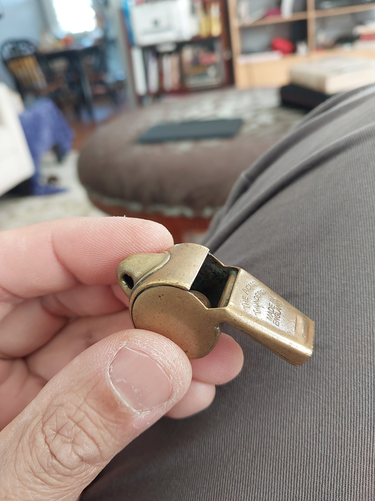
I am a man of sentiments. Yes, I could just use a cheap 50¢ made in China whistle that is provided free by the school, but something about discarding such a well-used and serviceable whistle bothers me.
My plan is to take it to a jeweler and pay them to solder it for me.
writerdecks
I've always been a big fan of physical word processors. The problem with typing word processor on Google results in Microsoft Word, Open Office, and other sumsuch. Recently, people have begun calling them writerdeck instead.
I've owned several over the years. And here is my current collection:
- Alphasmart Neo
- BOOX Palma
- Micro-Journal Rev. 4
- GPD Win Max 2
- Chromebook
I used to own a Pomera DM100, but I gave it away.
all saints' day 2024
Today is All Saints Day, and I am dressing up as a piece of sliced bread. That wasn't my original costume which the whole class had chosen a month ago. Originally, I was supposed to be a door. Our class is dressing up as the Jesus' "I am"s. But one student who had already bought their costume could not make it to the school parade. Another student was struggling to find a way to make her costume—The Shepherd—so I gave her my costume, and I wore the absent student's costume. i gave her all of the materials that I was going to use to make my costume.
For the Maybelline's Halloween work event, she dressed up as Dipper Pines from Gravity Falls.
Update: The girl actually dressed up as the shepherd, but I still wore the piece of sliced bread.
weight loss
I have currently reached my lowest weight for the past 30 years. I just reached 173.2 lbs. My goal is to read 165lb by the New Years, but that goal looks unlikely by this point.
My diet is intermittent OMAD fasting with low carb. Both fasting and low carb essentially do the same thing: sustained lower blood glucose levels.
Though I am not going to go into details in this post, I wanted to just go through a breakdown of some of the biggest big picture ideas I've learned since intentionally trying to lose weight.
Hunger is your friend.
Before fasting, I used to be scared of hunger. Hunger is used by the body to show malnutrition, right?
I thought so, but now, I am OK with hunger. Hunger is a poor indicator to show proper nutrition. It is one important factor, but this indicator frequently gives false positives.
Fiber First
There is a correct order to eating food. By eating fiber, fats, and proteins first, it slows down the absorption and breakdown of sugar.
Before, I scoffed at the idea of a salad first and sugary dinner last. But now, I realize it is to help reduce a sudden tick of insulin levels.
Preparation
How food is cooked and prepared vastly changes it's bioavailability. For example, rice has a pretty high Glycemic Index. But if you wash it then cook it with vinegar and olive oil, then cool it down for a day, it's GI reduces to that of brown rice.
A pureed banana increases sugar absorption than a pealed banana. Same thing with applesauce and a whole apple.
my current everyday carry.
Here is my current everyday carry setup, shuffled between home and the classroom.
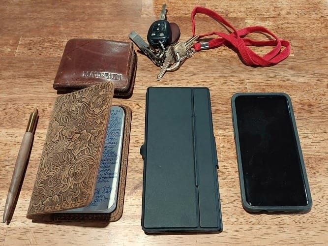
Wallet and Keys
Naturally, I have my wallet and keys. My keys are just the essentials. I used to carry my classroom whistle on my keychain, but I found it too cumbersome. So I now have a separate keychain with my school ID, whistle, and a pocket watch to keep track of time.
Years ago, probably over a decade back when I was in high school, my brother gifted me a full-grain leather wallet. I tried switching to slimmer wallets, but each alternative wore out or broke down quickly, leading me back to my original wallet. My brother had bought a set of three, and he gave me one of his extras. Eventually, I realized, if I keep reverting to this wallet, I must be a leather wallet kind of person. Last year, though, the wallet became so loose that my cards kept slipping out. So, I invested in a slightly higher-quality leather wallet. I still have the old one in a cupboard at home; I plan to use the leather for a watch strap. I like the durability of full-grain leather and prefer brown over other stains, trying to match all my leather goods, like watch straps, to that color.
Bluetooth Keyboard
I'm still on a never-ending search for a reliable writer’s deck. So far, the best option for portability is my pocket Bluetooth keyboard. While I have other keyboards for my desktop use, this particular Bluetooth keyboard is practical for travel. It has chiclet keys, which are comfortable—though not as much as mechanical switches—and comes with a wrap-around case that includes an articulating stand for my phone. I’ve used it so much that I can now type intuitively, despite the odd key layout.
Smartphone
My current phone, which I primarily use for writing, is the Samsung XCover 6 Pro. I’ve mentioned this in detail before, but it’s my favorite phone to date. It does everything I need and supports Samsung DeX, allowing me to use it as a makeshift desktop. However, it is lacking in performing more complex tasks.
I used to carry a pocket New Testament with Psalms and Proverbs, but lately, I’ve opted for my phone instead. Even with large pockets, adding much more than what I’ve described feels cumbersome.
Pen and Journal
The wooden spalding maple pen with a brass tip was purchased from Etsy. I like it a lot. I have a container full of Bic refills that I need to use up. The spalding maple smells flowery like roses.
I use a Field Notes pocket journal with a leather cover. I have several other Field Notes on standby—the full National Parks collection, in fact—but I’m still figuring out a good system for storing them.
What about you?
What do you carry every day?
I’m especially interested in learning about other male elementary school teachers’ everyday carries. I don’t typically bring a backpack or briefcase, so I aim to fit everything into my pockets.
baking pumpkin seeds.
As we approach Thanksgiving, my class does a measure by difference experiment where we weight the pumpkin with and without the pulp. Afterwards, I would collect the pulp, separate the pumpkin seeds and bake them in the oven.
It sounds tedious, but it it is actually quite easy.
First what you do is you stick it all in a large pot field with water. The pulp strands sink to the bottom and the seeds will float to the top.
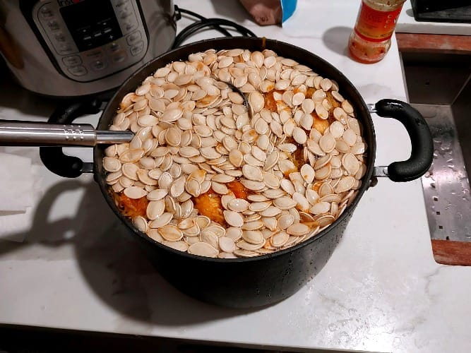
Then you just skim the seeds using a slotted label. This is much easier than picking them out by hand. Of course, you have to put your hand in there to break apart the stubborn seeds clinging to and tangled in the pulp strands. I would say that this takes me perhaps 30 minutes.
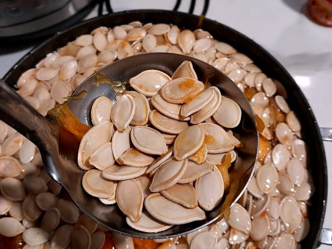
Once they are all collected, I rinse them out with water. The seed's are dirty. They were handled by a handful of students—who were playing out in recess, picking their nose, and who knows what else—so I make sure to thoroughly wash them. Then, I pat dry them with a paper towel or dish towel.
Normally, I would lay them out on a baking tray and bake them for about 40 minutes at 375°F, flipping them over halfway through. But this time, I wanted to experiment.
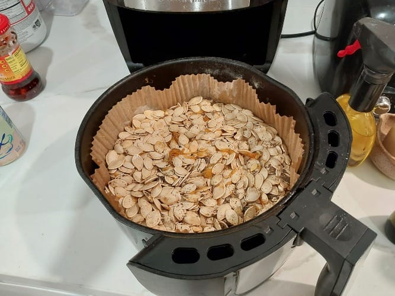
This time, I decided to use an air fryer. The air fryer was a gift from my parents, and I have been using it for EVERYTHING. If you ask Maybelline what is the most used kitchen gadget used by Tennyson, then she'll say "Air Fryer". It's just so convenient!
It worked pretty well. I had to do it in three batches, so it didn't really save any time over using the oven. But it seemed to be well baked and seasoned. I think it tasted better than last year's.
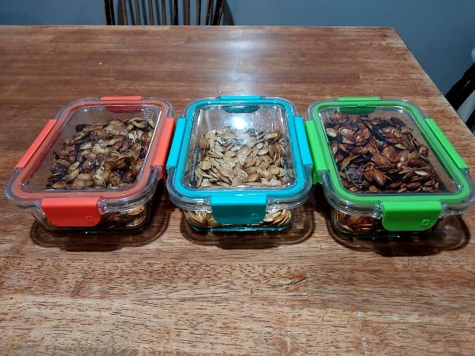
Just for the sake of impressing the students, I also usually season the pumpkin seeds with different flavors. I just use whatever is on hand. This year I made one with no seasoning, one with salt and garlic, and the last one with soy sauce.
I'll share it to the class tomorrow, and I'll let you know what they think about the flavors.
UPDATE [2024.10.29]: They said that the seeds were "alright", but kept munching munching munching on them throughout the day. When I took the seeds away from them, they complained.
first post, old blog.
I've heard about Ghost for a long time, and I've always been interested in trying it out.
This will be my first time paying for a hosting service rather than going through the grueling act of creating my own server and grumbling to myself for not learning the nuances of Server Managementand Web Hosting Management (Apache and Nginx).
What I like about Ghost is that it has native support for Markdown and a slew of other features designed for blogging and writing.
bells and tweed.
Improve one thing everyday. 5 second improvements add up each day. Worried that you'll make mistakes? Trust the process of small iterative changes. Small improvements mean small mistakes. Small continuous improvements means big improvements over time. Small mistakes allow for us to build problem solving skills.
Tuesdays are definitely one of the most busiest days because of Bells Class. Essentially, the whole school day between first recess up to Lunch is taken up by Bells. I don't mind. Bells is one of my (and my students') favorite classes.
I found a really nice Tweed
wool blazer from Goodwill. It fits me perfectly!
tired, tbc, hotpot.
Today, after my Bible study, I felt a bit grumpy, even though today is supposed to be a day of rest. The day was packed: visiting family, Bible study, meetings, and watching video lectures... Part of me just wants to drop everything and take a break from family, ministry, and countless other responsibilities.
For dinner, my family made a reservation at a hot pot restaurant to see my eldest brother off before he heads back to New York. I was rushing, anxious about being late. I arrived four minutes past the reservation time; I was the first one there. The next person didn’t arrive for another 15 minutes. Filipino time—that means being late, sometimes excessively so, and not feeling rushed about it.
At dinner, I met Frank, a friend of my brother from church. Frank is a CPA originally from Wuhan, China.
For the conference, I have to give KY credit; the scheduling, time management, and communication have all been excellent. Logistically, this may be the best TBC conference we’ve had so far.
Looking ahead to tomorrow, I have the whole day to prepare for the upcoming school week. I’m debating whether to arrive early to make sure I’m fully prepped or to come just in time for Bible study.
"The person you think of as yourself exists only for you. Every person you meet sees different version of you."
leaky 4-color pen.
For some reason, my four color big pen was leaking black ink. So I threw it away, and on my way back from a conference, I stopped by an Office Depot and purchased a new Big four color pen full stop actually I bought four of them. The reason why I went out of my way to write this down, is because there was a different brand there was a new one with a new ink formulation that is supposed to have a smoother ink flow. I really enjoy the original four color big pen, but and because I'm so familiar with it, I wanted to see how well this one compares. Does it look different?
plants and latin.
Today is Friday. We finally planted the seedlings into a plastic bin. I'm a little bit worried that the seedlings will not survive the transplanting process. But so far, the seats have been so hardy that they seem to be able to survive under quite extreme circumstances like still sprouting while submerged underwater. If they don't survive, then I'll probably just so some extra seeds into the dirt. I need to buy a new spray bottle and probably a goose neck watering can.
There's been multiple situations where I've needed a spray bottle just to missed the plants.
I'm surprised at how enthusiastic the students are about their classroom journal. They've been sharing what they've been writing, and very surprised at the depth and complexity of many of their thoughts.
Yesterday, I sent out the first round of test packets with lower grades. Especially the first few lessons of cursive which is understandable because many of them have not been practicing their cursive during the summer.
I've begun adding pictures to the journal, but I'm nowhere near close to taking as many pictures during the class time as I would like.
Today was also the first day of the Cinderella rehearsal. For Opera a la carte. Actually, I believe they've changed their name to a new name, but
I can't recall the new at the moment.
Last year, I bought new socks for every single day of the school year. The socks are usually food or artwork. Some of the socks are a famous painting or statues that show make it people. So I feel hesitant to wear them at work at an elementary school. Either I have to rig away to clothe them or not where they're all together.
Today for hot lunch Friday, the parents served chow mein, some type of savory breaded chicken, and a steamed broccoli and chicken dish. They even had a homemade dessert that was a coconut pudding with grapefruit slices. They even had those for keto and diabetic.
My document printer jam a few days ago, and I haven't prepared it. This year, I've been able to access the school printer without much difficulty using my phone and my laptop, so it is not a pressing issue to fix my document printer, but I should do it sometime when I have free time.
One of the difficulties of writing the homework journal beginning of the day is that it shows what needs to be done but sometimes, actually quite frequently, we are unable to do all of the tasks. So there are many times where we have to cross out or change what the homework journal says at the end of the day. Still, I find the planning the day very helpful for the students. So I will continue to do so.
During pe, which was capture the flag, I asked Stevo if I could be the one to teach latin. He gave me the go ahead, which is better for the students, but it puts a little bit more workload on my end. However, it also reduces the workload on Stevo who is currently teaching 6th grade this year.
I got a new Bible, which is a New testament Bible with Psalms and proverbs. It is about twice the size of a small Gideon's Bible but their text is very readable and it looks like it's a much better quality Bible than a Gideon's Bible.
boss castigation.
I got in trouble with my boss. It was a mild castigation, where he said that I shouldn't bring my coffee to the American flag as we say our Pledge of Allegiance. I'll be careful not to do that from now on.
root viewer.
Today, the class set up the root viewers. This will be a surprise to me too because it includes not just turnip seeds but broccoli, alfalfa, and clover seeds as well. The mom suggested that it is better to presoak them, which I have never done in past years. I presoaked them for 4 hours. Many of the seeds sank to the bottom. I've done this before for making soy milk and growing butternut squash. We'll see how they turn out.
I plan to bring my onion plant to school so the students can see the roots.
I saw a fig tree on my walk around my neighborhood.
I found out that one of my students parents is actually the guitar teacher of my mother-in-law! What a surprise! Today was teacher commissioning day where many of the parents prayed and blessed the teachers for the rest of the school year. My mother-in-law attended.
The commissioning has just finished and I'm driving home right now. While driving home, I got a bloody nose which I don't know what that means but most likely it shows how tired I am. Last night when I had tacos with my brother who's visiting from new york, I didn't sleep until fairly late at night at 11:00. I'm very tired. Vivian made Korean marinated eggs which are often called drug eggs because of how tasty they are. Last night I made steak. So I'm going to eat quite a luxurious meal tonight.
In preparation to the walking field trip to the Performing Arts Center and the Mountain View library, I am reading aloud The Secret Garden. The play The secret Grden will be playing in the Mountain View Performing Arts Center the day we visit.
One of the students constructed a stamp using my new "Gutenberg Press". It's not really a Gutenberg press, but Lego inspired press relief art kit called Prixel.
One of the parents wanted to help fund crazy projects for the school, especially science projects. I've been thinking a lot about some of the projects that we could do. One of the ones that I really want to do which would be quite an expense would be that happen established school garden. Every year we have to make a garden scratch, and I feel that we should have a cultivated garden that the students inherit to have taken care of. It would need to have an automated watering system, a plant nursery, and labeled plans for that are edible. So that by the end of the year or every season, we can have seasonal fruit and food solid that we can eat.
this year's class - first impressions.
I normally don't talk about my classroom to keep the privacy of my parents and students. This was a section of my newsletter which does not reveal any sensitive information, and also casts this year's class in a positive light.
Some of the things that the students were interested in that I briefly mentioned but we won't really cover in depth this school year are the following:
- Abraham Lincoln's wife was a spendthrift.
- George Washington prevented a soldier's riot by putting on his glasses.
- the diet and lifestyle of a raccoon
One thing I really appreciate about this class is how creative and artistic this class is. I'm excited to see how each and every student will grow and mature over the course of the school year. Two artistic things that we will be doing this school year is writing a personal classroom journal and making a scrapbook. The purpose of these two creative projects is to have some sort of physical memorabilia that they can look back on with fond memories. I told the class that the journal will be an open book journal and that parents will have access to their thoughts and questions. So if you're interested in their questions and their experiences in fourth grade, feel free to come into the classroom and look through the students' journals.
Last week, I read a lot to the students the picture book "The Bad Case of the Tattle Tongue" which talks about the difference between tattling and reporting. This week we will read the picture book "Rosie Revere engineer" which talks about the difference between someone laughing with you versus someone laughing at you. It also talks about the scientific process and how science is about how the first trial in inventing something may not be successful, but that does not mean that the science experiment was a failure.
saturday at school.
When I arrived at the classroom at around 2pm, Steve was cleaning out the sump pump near the upper grades bathroom. It stank! The wafts of putrid sewage could be smelled all the way to parish hall. Basil and Lucy were in the parish hall playing with dominos. Basil's face was scrunched when he greeted me. He said that it smelled like "a bad turkey", whatever that means.
It surprises me how goes on behind the scenes without much notice, especially by Steve. Carpet cleaning, sweeping, scrubbing, scraping, raking leaves, mopping floors... The school is a mechanism whose underlying gears work endlessly, most going unnoticed. Just imaging Steve's endless toil makes me feel exhausted: father, janitor, headmaster, Sunday preacher, writer, Latin teacher, 6th grade teacher, and today, sewage cleaner. But if he knew the work I put in, he probably would feel exhausted too. Cleaning, organizing, planning, writing, collaborating... He would probably think, I couldn't do what you do. I have the same sentiments concerning him.
These inner gears, extend beyond just Steve and I. Parents are doing their utmost help their children become men and women of import, being good parents and working hard in offices to put food on the table; engineers, doctors, accountants.
introduced first thoughts journal.
I introduced the journal today. The students were ecstatic. I hope they keep it up. Journaling is one of my most enjoyable hobbies, and it is a joy to reread my inchoate thoughts of my youth. My hope is that these journals serve as a momento of their experiences in 4th grade.
bible study and classroom prep.
I did Bible study with LY. I was late because of Canterbury CS's Beautification Day where parents and their kids would come to the school to make the school beautiful.
Afterwards, I cleaned the classroom. I packed my car with non-classroom related material, and I went home by 2PM.
I arrived back in the classroom at 6:30PM. By the time I left at 10PM, finishing about 90% of the classroom preparation. Now, it is primarily lesson planning and preparing for Parent Orientation night.
I plan to do that after church tomorrow. I am relieved that most of the heavy labor is finished.
"Time and effort are investments that always pays off." — Frieren
classroom cleaning prep.
In the process of cleaning the classroom. I would say I am 80% there.
I'm trying to downsize my classroom and I'm getting rid of a lot of old books and teaching materials that I don't need. I plan to donate the books next week on Monday, August 26th. (Please ignore the box labels.)
I'm starting to feel weary of all the cleaning and organizing. I cannot see how I can finish all this cleaning and prep work before the first day of school.
thinking & non-thinking tasks
For audio, I usually pair intellectually-stimulating audio with non-thinking tasks. And non-thinking audio with thinking tasks.
So for homework and studying for example, I would listen to classical music. No lyrics. I can enjoy the music while putting all my mental bandwidth on the homework. Or something that I've already listened to.
I would listen to podcasts and audiobooks when I am doing something tedious and boring. So, folding clothes, prepping and cutting veggies for meals, cleaning my living room.
It's just magic. When I am listening to a good audiobook, by the end of the chapter, my living room is clean, the washing machine is running through a cycle, and the clean dishes in the drying rack are put away in their proper shelves and drawers.
free groceries.
I'm not ashamed to say this: I go to the local food pantry once a week. Money is tight for me and my wife especially after buying a house. We are saving up for the future and set up a strict budget for ourselves.
Our local food banks are teamed up with grocery stores to sell items closer to the expiration date.
The food banks want to get rid of all their food because they are required to report how much groceries are left behind. If there are any left overs, then the government will provide less food in the following weeks or months.
The one I go to is actually linked to my local community college. It is set up like a traditional grocery store, and it's convenient because they are open from ~noon to 6pm Monday thru Thursday.
Here has been my free grocery haul for the past month:
[Insert Pictures]
The avocado day was weird. So apparently, they restock on Friday. Normally, there is a limit to vegetables. But to get rid of old inventory, and to get rid of vegetables as much as possible (for reasons stated above), they remove the vegetable restrictions on Thursday before closing.
But growing up, my family never had that stigma because my parents had to rely on welfare and food banks when they were brand new immigrants in the early 80's. They pinched every penny until they could create business. By the late 90's, my parents were in the upper-middle class, but even so (or perhaps because of it), my parents still were very frugal, only bought things used, and went to food banks. (Actually, my parents were such frequent visitors that food banks would call my parents to take food that the food banks needed to get rid ASAP.)
jins.
I bought two pairs of glasses from Jim's. One pair is fully circular, and the other isn’t quite circular but has magnetic clip-on sunglasses. I'm excited because I’ve always wanted circular glasses, and I’ve never had prescription sunglasses before. Two firsts!
UPDATE [2026.06.05]: I love my circular glasses. I don't think that I will every go back to non-circular glasses again.
my hero academia.
I like the idea behind My Hero Academia, which suggests that children possess powerful and potentially dangerous gifts that they need to learn to hone and use safely as members of society. Themes of teamwork, legacy, inheritance, justice, and ambition run throughout each episode.
fourth of july dinner.
I grilled food for my family.
I bought a natural gas Napoleon grill. It is so nice to not have to worry about running out of propane. It was fancy, but it was also on sale.
The grill is directly attached to the natural gas of my house.
costco virtue.
In Costco. I like food samples because they teach me moderation (small portions) and patience (waiting in line).
goodbye, mustache.
I'm sad. I decided to finally pluck my mustache hair and soul patch. It feels like an end of something significant. A hope and a dream of someday having a glorious bushy mustache.
When I told my wife that she could pluck my mustache hair, she ecstatically ran to get her tweezers and went hog wild uprooting my carefully cultivated upper lip hair.
What made me decide to finally pluck it instead of just shaving it was looking at my brother M's scraggly sparse whisps of hair. Ew.
And then when I recorded myself reading Numbers 20 that same day, the seed of reluctant acceptance that my mustache is ugly finally sprouted.
Goodbye, sweet mustache. You may have been ugly but I truly did love you. I tried to be the Fern to your Wilbur, but the I ended up becoming your Mr. Arable.
faults of a teacher.
I am not the best teacher. I'm a good teacher. I'm a passionate teacher, but a the best? Not even close.
One of my many failings is that I'm too invested in my students grades. I have nightmares about a student getting a B. If one of my students gets the wrong answer, my heart breaks. Even if it is outside of my control and I gave them every opportunity to succeed, if they get a problem wrong, it feels like a wound reopening.
The problem is that I do not look at my skill as a teacher by looking at the class average but by the struggling students. Those high-achievers, they will get a high score even if they I teach the curriculum badly. But those students who struggle, they are they are the ones who need me. They need that one teacher that makes everything *click*. That epiphany that learning is fun. That many things in life need to be incremental. That the best things in life require effort. A role model.
At least, that is what naturally comes to my head. I know some teachers who don't give two rips about their students' grades. As in, they receive what they deserve. You put in the effort, you get an A. You don't put in the work, you get a lower grade. My mind does not operate that way, but I wish it would.
bad sleep. reading the bible recording.
Haven't had good sleep recently. Don't know why but I have a few suspicions. Recently, I've waking up next to May's feet. She rotates in her bed every few weeks because she can feel the lumps of the mattress. Also, I am getting a little weary of fasting and having a restricted diet (OMAD Keto). I might take a break.
One thing I'm trying to do is record myself reading the Bible everyday. It's more of a 'skim the surface' type of reading rather than a vigorous 'Bible study'. It's a habit building exercise. I'm roughly using the liturgical morning prayer calendar reading of my school. Today will be my third day.
101 dalmations.
The classroom is watching 101 Dalmatians in the classroom. I forget how beautiful the drawings and animations are. I love the style.
stories, bar-jobo.
I once asked Uncle Eli how he made his famous 'bar-jobo'—a refreshingly modern take on Filipino adobo with the addition of Texan barbeque sauce. It was one of my favorite dishes growing up, second to my dad's pork sinagang—a type of sour soup.
"Let me show you!" he said while grabbing ingredients off the shelf. A pinch of one herb, a rough spoonful of another, a shake of a spice jar here and there. I took a mental note of the hapazard concoction he was rapidly making. He only paused occaisionally for a brief taste. "Needs more tarragon," he mused.
A few months later, I witnessed him cook bar-jobo again. This time, the recipe was wildly different. No terragon. There was a complete ommission of onion powder. He doubled the use of garlic salt. He even used Cajun seasoning! Expecting a completely different dish, for it had a completely different recipe, I was surprised when I ate the first spoonful; the bar-jobo was exactly as I remembered it. When I asked him why he made those changes, he shrugged and said, "I just keep adding ingredients until it tastes right."
This style of cooking, cooking by taste, is not unique to Uncle Eli but to all Materums. Though, I can confidently say that Uncle Eli's culinary skill overshadows everyone else in the clan.
This is how my family operates, not only in cooking, but in everything, especially storytelling. The nuanced details of a story may be different—the second or third retelling contradicting the first—yet the culmination of each story results in a consistency and distinctiveness just as recognizable as Uncle Eli's "bar-jobo".
All my relatives say, "These stories are important. They should be written down." But they never felt the need to write them down themselves. Which I believe in large part is because (1) it is hard to get the details straight. Each family member tells it slightly differently and (3) it's more enjoyable to say these stories out loud; writing it down is, in comparison, a hassle.
I've decided to write down these stories. If I get the facts wrong, that's because I wasn't taught the story correctly. And hopefully, I'll create so much of a hullabaloo with my innacuracies that it will compell my relatives to write the stories on their own. They're much better at telling them anyways.
hungry.
I've been hungry for Indian food, but Mayb is not in the mood. I've been muttering my longing under my breath. May—rather annoyed by my incessancy—tells me just to go and eat out. I refuse because it is more shameful to go alone than to quench my urges.
Instead, I cooked Korean short rib and "sechuan" tofu.
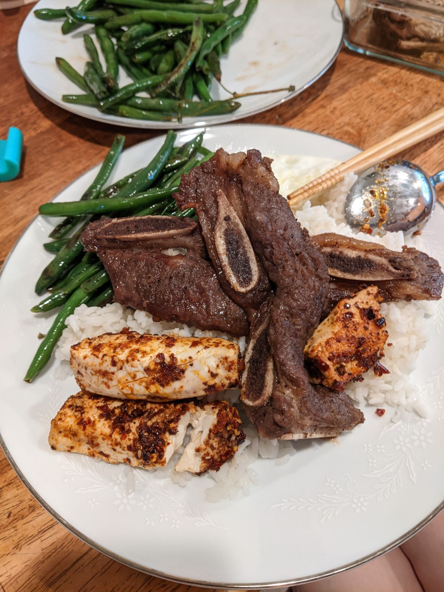
The rest of the day, I made it a point not to talk about Indian food in front of May.
languid.
Usually when I go to the classroom during the weekend my spirits are revved, and cleaning the classroom is quick work; yet today, I languish.
I cleaned the classroom, finished writing my newsletter. Didn't do any grading. Going to call it a day and spend time with Mayb.
on writing well.
Almost finished reading On Writing Well: The Classic Guide to Writing Nonfiction by William Zinsser. Love it. He seems to be in the same camp as E.B. White—Clear, simple and pleasing sentences; logical, sequential, and narrative-driven articles.
This is one of those books that deserves a reread.
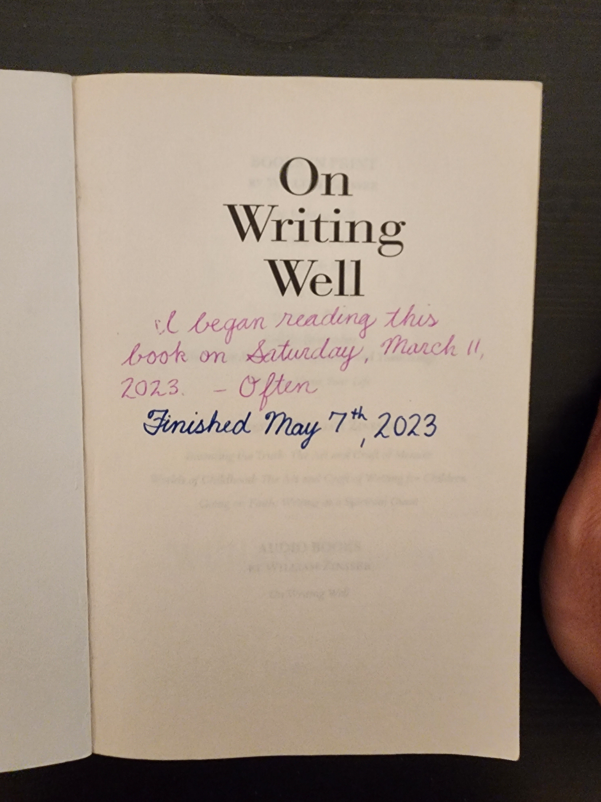
UPDATE: Finished reading the book. Enjoyed it immensely.
lead teacups.
I decided to test the teacups I've been collecting for lead. Can't use about a fourth of them.
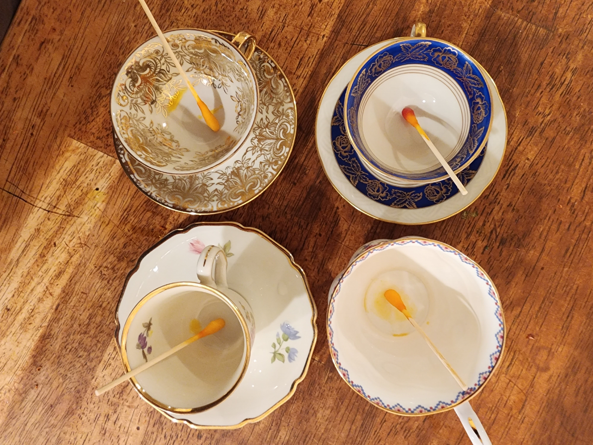
The red color on the swab, as opposed to orange, means that there is presence of lead.
lunch with g.
On my way home after cleaning the classroom, I turned on my cellphone—I don't like leaving my phone on during work. Mayb had been calling me all afternoon. Annoyed and fed up that I was not answering my phone, she jumped in her car to pick me up from the classroom. "I just left the school." "Stay there. I'm coming to pick you up." I looped around and parked back into the parking lot.
Had lunch at an Afghan restaurant in Hayward with a bunch of friends from Chinese Christian Fellowship, SLO. Gid had a work gig in Hayward and invited a bunch of friends.
I was the oldest person there.
The heater wasn't working so many of us were a cold. Myself included. The dishes were excellent, but I had to abstain from most because of my restrictive diet.
Afterwards, we went to Nations to buy pie.
MH asked me, "As a married man, any marriage advice?"
No, not really. Marriage is amazing. Every metric in my life has significantly improved. Health. Cleanliness. Finances. Though, I'm not sure if that's also true for Maybelline.
train trip.
I love taking the train. It is so beautiful and quite economical. It's only about $60 to travel from San Jose to Anaheim.
You can travel through areas that are inaccessible by car. You get to see beaches, swamps, pastries, urban jungle, farmland.
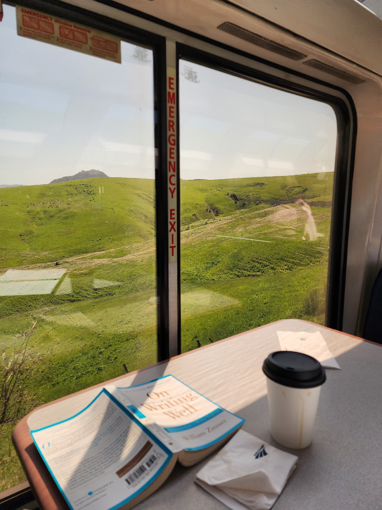
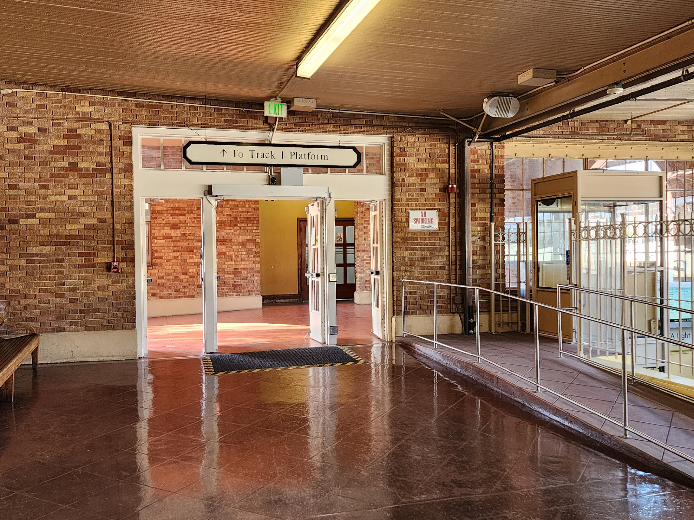
stayed at Uncle Tony's house. I slept on acat and a sleeping bag.
I celebrated my birthday in Alhambra. No, I didn't go to Disneyland. I am 33 years old.
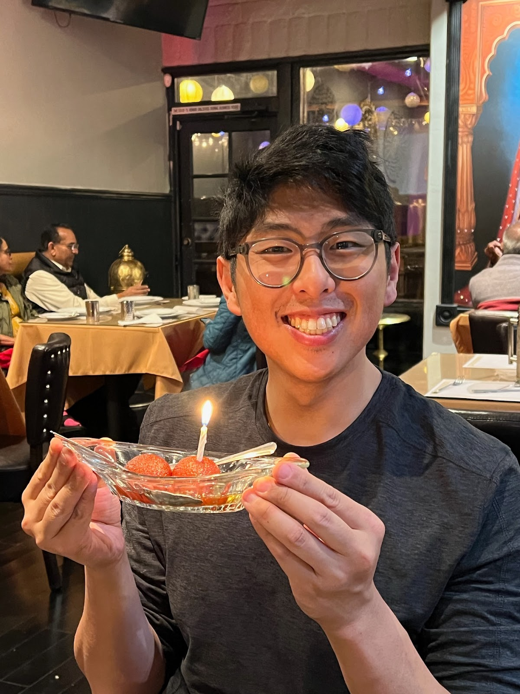
I ate at an Indian restaurant with Sam, Susan, and Uncle Tony.
trip.
Saturday. flying to Vancouver
In the morning, I drove to the classroom to pick up some gloves, jacket, and a notebook. I also got a haircut. There was a dog that I could hear barking in the back.
Drove to in-laws house. I was sneezing because of the cats, or perhaps it was a delayed allergic reaction from the dog from the haircut place. Taxi pulled up and we stepped in. Pretty quiet on the way there. Nobody talked. I took a nap. I was sneezing a lot probably because of an allergic reaction in the cats.
There's a lot of preparation, not from me but from my in-laws to make sure that going through customs in the international airport was as ease free as possible.
Watch lady really aggressive. Selling me a $70 watch for $140. Asked the price, and she brought it to the front counter and said, "let me ring it up. There's a 30 perc discount and even more if you buy two!
I am reading Farmer Boy while waiting for departure:
goodbye Bay Area. See you on Thurs.
all-saints parade.
I'm in over my head. I am dressing up as a the boy with loaves and fishes for our All-Saints Parade. Last year, I dressed up as Jonne Donn. The year before that, I dressed up as a Lilies of the Field.
This year, I decided to try to make everything myself. Looking online, I found some directions to make a "no sew" biblical costume. Enthralled, I set to work.
How was my costume? Let's just say that next year if I decide to continue the handmade route, I'll learn how to sew. I heard that Fr.F's daughter is quite proficient at sewing costumes. Perhaps, I'll ask her to teach me when I'm visit up north to Chester.
One part of the costume I was particularly proud of was my drawings of the loaves and fishes. They were cute, but my students were grossed out by the "kissy-face" fish.
Children's Book Illiterate
I am children's book illiterate. Unlike many of my peers who developed a deep love for learning at an early age, I began to enjoy reading in my late teens.
So, I have no nostalgic familiarity with popular children's books. It wasn't only until recently that I've begun to read these book series:
- The Lion, the Witch, and the Wardrobe
- Anne of Green Gables
- Little House on the Prairie
- The Moffats
This has become a difficulty as an elementary school teacher recommending books to my emerging voracious readers.
Recently, I've made an endeavor go read popular children's book. It is surprising how many of these books are engaging.
I'm also quite surprised at the rich vocabulary of many of these books.
secret tea.
In the corner of our apartment kitchen, there are three appliances used for a two-plug wall outlet. we have a kettle, a coffee grinder, and an espresso machine. The espresso machine takes permanent residence for the bottom plug. While the top plug switches back and forth between the kettle and the coffee grinder.
every morning, I have to unplug the kettle to use my coffee grinder. which is odd because I rarely use the kettle.
is my wife, Maybelline, using the kettle behind my back? now that I think about it, I see hints everywhere. tea bags in the bin, the occasional purchase of tea from trader Joe's, a dirty mug with stains too light to be attributed to coffee.
Maebelline drinks tea. behind. my. back.
should I be worried?
it seems clear to be now, like a veil lifted away from my eyes. like scales atop my pupils falling to the floor.
why does Mayb drink tea when I'm not around, and why is she keeping it a secret from me? she has never even mentioned her drinking habit when I asked her, "How was your day?"
what else does she do when I'm not around? does she cook? clip her nails? rearrange the shoes in the shoe rack? how would I know! she doesn't tell me.
I thought relationships were built on honesty!
nightmare
I dreamt that my principle sent me over to cover as a substitute teacher for King's Academy, a Christian middle school and high school that most of our students attend after graduating our elementary school.
I had to walk down the long squeaky laminate hallways—I have never been to King's so my mind replaced their campus with my highschool campus—trying to find the classroom I was subbing for. I was stepping in as a substitute highschool Chemistry teacher.
The highschool students wandering the hall intimidated me. They were all a head taller than me. All of them male, thickly built with broad shoulder as if they were Samoans or perhaps football players. I could smell the pungence of unregulated puberty-rampant hormones and Axe Body Spray.
I work up before I found my assigned classroom. Despite it being a nightmare, part of me wanted to continue that scene so I could see my former students.
I talked to my boss about it, and he said the dream was "very telling". He left to do more administrative work without elaborating. I wonder what Fr.S gleaned from my nightmare.
grading.
I made the foolish mistake of deciding this year to grade the students' grades after reviewing the weekly Tests & Quizzes packet. In my mind, I thought, "As long as I receive all the assignments that I pass out, it will be OK."
However, what I did not realize is that all of the assignments have been collated by week and separated by student instead of by test/Quiz and by subject. This makes grading VERY tedious. Flipping through each packet, find a grade, flip to the subject on the gradebook (I use a physical gradebook), and write it down. Rinse and repeat.
UPDATE: I decided to go home and finish the grading there. On the drive home, I had a brilliant idea of unstapling the homework packets and organize them by subject. When I arrived home, I made speedy work of the grading. Sometimes, changing locations give one a unique perspective—especially when problem solving.
the categorical imperative.
I've come across this problem multiple times from different areas of my life: (1) Should I live my life according to what the world should be OR (2) Should I live my life as a reaction and an anticipation of how the world currently is?
Let me give you a few examples:
- People should not lie. Should I trust what people say at face value or be mistrustful.
- People should not steal. Should I lock my front door when I go to bed.
- Students should put their value not on their grades but by how God sees them. Should I worry about a child's grades?
I this may sound silly, for many of these situations is self-explanatory. Yet I see time and time again students, family, and friends shocked and in deep distress because they did not fully think through these situations.
progymnasmata.
I've decided to endeavor to become a better writer. There are many courses out there, but the one that interests me the most is the progymnasmata.
Personally, my most comfortable style of writing has always been free writing, zen writing, stream of consciousness... It comes in many names, but essentially, you barf onto a piece of paper and pick out the nuggets of eloquent kernals for future drafts. It is writing with the same haphazard fluency of speaking outloud. It is shoving out inner editor into a dark, damp dungeon where he cannot exert his tyrannical desire for every word to be prim, perfect, and proper.
While free-writing did take away my awkward hesitancy as a writer, I recognize that all other aspects of my writing are sorely lacking. What I mean is that the beauty and eloquence that I see in other people's works—the thrumming vibrance that drew me to writing in the first place—is somehow missing when I put pen to paper.
After looking around for other writing technique—and there are an abounding number of writing techniques & methods—I've decided undertake the progymnasmata. In large part, because I am a classical teacher who one day hopes to teach it to my students.
According to the progymnasmata, here is roughly the order of writing genres:
- fable (mythos)
- narrative (diegema)
- anecdote (chreia)
- maxim (gnome)
- refutation (anaskeue)
- confirmation (kataskeue)
- commonplace (koinos toppos)
- encomium (encomion)
- invective (psogos)
- Comparison (synkrisis)
- Personification (ēthopoeia)
- Description (ekphrasis)
- Argument (thesis)
- law (nomos)
Much of it is "copywork"—literally copying down the original work verbatim. Afterwards, the student would make small tweaks and adjustments using different literary techniques.
I have much more to say about the pro's and prose of teaching the progymnasmata, but I'll leave that for another day. In terms of my next steps personally as a writer, I've said my piece wholly.
uneventful.
Today was a busy yet an uneventful day; one of those days where you spend preparing: doing laundry, folding clothes, organizing a bookshelf, taking out trash. Nothing memorable but whose tasks help level the path of future me, actions that ripples ease and purposefulness of upcoming days, for creativity often comes when one is free from worrying about both long-delayed and upcoming chores.
As I folded each shirt, washed each dirty dish, emptied out the trash, my soul let out a sigh. Something in me, that I don't know was there, felt tight like a wound up watch spring, and each accomplished task was like the ticking of the time-piece.
It is now late. The sky has darkened, and my eyes feel like heavy curtains.
It is a forgetful day, a busy day, a relaxing day. A day that engenders indelible memories ahead.
saying no.
I need to learn how to say no. So tired. Absolutely, resolutely tired. No more accepting work other than what is already on my plate.
cleaning day.
Lounging around and doing our typical rally of "What do you want to do today?"
Maybelline and I decided to make today a lazy clean up day.
Our apartment has become messy. Not so messy to be unlivable, but enough to not invite visitors. Maybelline suggested that we pick areas to clean up. Today, I chose the living room.
sabbatical.
On stressful says, Maybelline would say to me, "Why don't you just become my house husband? You can just cook and clean for me. In your spare time, you can just finish writing that book of yours."
I've always shrugged it off. As a DINK—I just learned this term recently!—it does sound appealing, but I always reject her offer. "The school needs me more than ever. I don't want to leave them hanged to dry."
But this year is taking a toll on me, and my hopes of fulfilling adjacent teaching pursuits—writing, curriculum design, higher education—seems to increasingly diverge. I thought that I could divvy up my time between my day job and other pursuits, but the amount of work I place upon myself seems to have increased, not decreased.
We had a recent discussion about my busyness at work after discussing a recent phenomenal coined "quiet quitting". Working for a private Christian school is different from secular jobs. To be honest, the pay isn't too stellar, but the heavenly benefits definitely outweigh the earthly benefits. Teaching for me is not a side hustle or even a passion project; we are at the front lines of the Gospel, teaching others to love of Christ by the motions and rhythms of our lives. Yes, evangelizing to adults is important, but there is just as much and even more importance in raising our youth in the faith. The famous 2 Timothy 3:16 is applied to adults who have learned and have long-been familiarized with scripture since they were a child. Teaching is not glorified babysitting, but there is a sense of caretaking. We are given the care of assisting parents in their pursuit of raising godly men and women of God.
It is a sacrificial job even when considering sheer number of hours alone. During the school-year, I spend more of my waking hours with my students than I do with my own wife.
Anyways, I talked to my boss about possibly taking a sabbatical in two school years. Thankfully, he was open to it.
intermittent fasting.
For weightloss, intermittent fasting (IF) is almost magical; but ultimately, it is just CICO. You can't break physics.
I don't think IF is a one-size-fits-all type of diet, but I can confidently call it a one-size-fits-most.
There were a lot of life-lessons I gleaned from Intermittent Fasting. Here are my top two:
Subordination of Hunger. Hunger is something that should not control us. IF taught me that hunger does not equal malnutrition. Sometimes I'm hungry, and I know that feeling will soon pass.
Increased Focus. I would not say it gives me extra energy, but I do feel like I'm more monotask oriented. Sometime, I feel so focused that I forget everything else around me except the task at hand.
Easier to Abstain than Restrain. It is much easier to say, I cannot eat right now because I am in my fasting window, rather than, I am only going to eat a small portion of this delicious food.
commissioning night.
Looking up at the ornate trusses. Deep latticework reaching up to the center ridge board like the spine of a Leviathan, ribe curling around me as if I'm caught in it's belly of a beast.
Sweltering heat. Everyone inside is fanning themselves with the bulletin like Southern Belles.
widening my english vocabulary.
I began to seriously learn to expand my vocabulary. I've begun using a flash card app on my phone.
One problems is that the app doesn't spend much time reviewing 'mastered' words. Another is that it give no opportunity to make sentences in context.
I decided to write down the existing words on 3×5 Index cards... and I am surprised by how many words I have gone through of the past few months. Over 200 words!
I guess once you get into the habit of going through flashcards in a game-like app, the amount of words learned rapidly accumulates.
I've separated the "mastered" cards into four piles:
know but rarely use
For example, "unadulterated". I know the meaning and feel confident that I can give an accurate definition, but it is not part of my daily vocabulary.
kind of know within a specific phrase or idiom
For example, fraught which means to be filled with. I use it in the phrase "fraught with terror", but never knew the exact meaning of until encountering it in a flashcard.
This is true for words like single words like auspicious from the word inauspicious and credulous from incredulous. I know them with their added prefix, but not in their original stem.
words that I know etymologically, but never use
A good idea is hapless which means unfortunate. I know it has to do with having no "hap" which is found in the word happy. So, it therefore means, something that does not have any happiness.
Another good example is immure which means to enclose, trap, or jail something within a wall. Knowing the words mural (like art mural) and intermural (like in intermural sports) helps me know that it is related walls in some way.
words I have never used and do not know
These are words that I have no familiarity with. I'll probably forget it in a month if I don't review it, and I cannot determine the meaning of the word in a book unless I guess the meaning from context. Some words include: indolent, ennui, terpsechorean.
good things.
Here are a few life skills I learned that I wish someone taught me when I was younger:. (But even if someone taught it to me, I would probably to too young and brash to understand):
- A little bit of a good thing is better than nothing.
- A little bit of a good thing usually becomes bad if done in immediate excess.
- The good things typically requires time and effort.
up and up.
My weight is finally below 175 lbs. So, starting from now, I am setting new personal records for weight loss, fitness (pushups and pullups), language (Mandarin and Latin), and writing.
It seems like many of the major accounts of my life are improving. I attribute my success to a number of life-changes:
1. Art of saying "No".
I have a problem of always saying yes. I put so much on myself that I find myself over-burdened, overworked, and stressed. Then people will be disappointed in me for not following through with my commitments.
The solution is simple for me. I just say, "Let me think about it." and then I make a list of pro's and con's. If they want me to make an immediate commitment, then I decline.
Even the simplest task is 3 times harder than what it initially appears to be. Let's pick an easy example: Take out the trash on Friday, once a week. It's easy, right? Wrong.
Bare minimum we have to think about:
- 1. What happens if I am not there? Who will take my place? Do I need to train him?
- 2. What habits and activities will this replace or displace?
- 3. Can this be done on my own time or is it dependent on another person? As in, can I take it out on Friday morning or do I have to take it out between 4-6 on Friday evening?
- 4. I clearly don't intend to take out the trash for all of eternity. Who will replace me when I am gone? What should I teach that person? What steps can I make to the environment to make it easier for my successor?
- 5. How do I complete this task with excellence? How can I do this task so that it points others to God? These responsibilities usually go beyond the job description.
- 6. Is there anyone else to mentor me or will I have to learn how to do this task myself? Learning to do a new task from a competent veteran and learning to do it well takes time. Learning how to do it from scratch takes even longer.
So for me, employing the triple rule: "How long I think it's going to take? Triple it."
So a 1-hour task becomes a 3-hour task. And a 3-hour task becomes a 9-hour task. This re-calculation has been pretty consistent thus far.
When keeping these in mind, it is much easier to say no even when they try to convince you by saying, "But it's easy." Then, I can clearly and confidently say, "No, it's not, and by telling me that it's easy makes me more inclined to say no."
2. Slow and Consistent Improvement
I've come to the humble conclusion that I am just an average person. I don't have any particular skill that makes me a step better than the rest of the world. I am not in any way privileged, and unlike my brother, I don't have the mental acuity and memorization skills to do an all-nighter and get an A+ on a test.
But this humility comes with a benefit: I am not an exception to Psalms and Proverbs. To Aesop's Fables. So, I can roughly rely on these ancient wisdoms to make self-improvents.
If I put in the work, if I use repetion and consistency to slowly improve a skill, I will slowly begin to gain mastery. I've given up on taking shortcuts, accepted that I'll make mistakes, and understand that there will be hardships along the way. Now, I can see steady improvement. The phrase, "It's that simple," is something that I've come to accept.
3. Maybelline
My wife encourages me to improve. She is not even doing anything to make me prove. It is just her presence and lifestyle that has brought so much improvement in my life. When I see that she is sad that I do not put my dirty dishes in the sink, I start to put them in the sink. When I see her frustrated at the mess in the apartment, I clean the apartment. When I see her look of concerned bewilderment when I said I accepted another responsibility when I am already overwhelmed at work, I take a step back and reconsider my options.
4. Fasting
This is both physical and for spiritual reasons. I find that it is so essential to my life now that even if I hit my target weight, I plan to regularly fast.
I should of started fasting years ago.
pushed off bed.
Restless sleep last night. I could feel Maybelline taking up more and more real estate of the mattress. My body was pushed to the very edge, arms to my side and legs straight like an plank.
My unconscious mind is a pushover. If you nudge me, I don't nudge back but move to give you space.
Oddly, when I went to go to the bathroom at probably 3AM, I found my wife sleeping on the couch. She was never sleeping on the bed in the first place. Last night's whole ordeal was just my imagination.
recommendation letter.
I had a nightmare about someone messaging me as a moderator to delete and suspend an account that was harassing another user.
It's the middle of the night (1:30AM), and I cannot go back to bed.
These nightmares are emerging because of a text message yesterday from someone from a very dark, emotionally difficult time, where even 5+ years later, I wake up in cold sweat in the middle of the night just thinking about it. This person was asking for a recommendation letter.
Back then, there arose a heated argument that came down to (1) obeying California and Federal law or (2) following certain traditions.
At the time, we didn't know that this one issue—which was the legality of enforcing physical meetings for quorem—was actually a microcosm of a much larger issue: much of what this 501(c)3 non-profit organization has been doing the past few years were being done incorrectly. It took about 3 years after this whole spat, with half of the leaders stepping down in frustration, to untangle the mess we put ourselves into. We fixed our bylaws, hire a new accountant, and set the ministry back on the right path.
There were times when one SHOULD disobey the law, especially when secular government laws oppose God's moral law. But this particular case was not one of these instances.
What made this time so stressful was that there were two sides on an opinion, and they were pressuring me make an opinion while I remained ignorant of the facts. At one point, my presence would meet quorem, and they could vote to continue disobeying the law and sweep the whole issue under the rug. I remember spending hours on the phone talking with advisors. Sometimes 5+ hours.
My final decision was to determine (1) California and Federal Law, (2) biblical law, and (3) see if there is any conflict. My decision was to look into the actual bylaws of the organization (the most recent ones sent to the government) and not just listen to hearsay on what should be done. People didn't like my decision because I visited a lawyer for legal advice. There was so much gossiping, bad advice, and stupid decisions being done. I was sick and tired of trying to sift through all this legal talk and 'what-if's and 'that is just your opinion'. I wanted a firm ground to stand on in saying what is the right thing to do.
In my foolishness, the group invited me to an informal meeting to just talk. I accepted, and when I arrived, I was caught for an hour being berated by everyone else around me about how foolish of a decision I was making. One person even told me, "...there is a special place for me..." if I continued what I was doing. To put it bluntly, he was telling me to go to hell.
All the leaders actually met together in person with a pastor as a mediator to bring reconciliation to the two bickering parties. Then we made a joint decision and shook hands. A few days later, the other group went back on their word! I was flabbergasted.
It finally took bringing out the bylaws and saying, 'This is what we should follow. Here are the legal-binding leaders of the organization. If the organization gets sued, we bear the face of this organization in the eyes of the government. Here is what we will do, and if you do not like it, leave.' We said it in a much gentler tone, but our stance was firm and clear. In the end, they didn't like us emphasizing all this 'legal this, legal that', so they stepped down from leadership.
I have made many mistakes in the past, but not this one. I have no qualms about the decisions I made. I made the right choice.
And no. I will not be writing that recommendation letter.
Sonnet 1
With peace, I find a joy so great and deep,
In God, my Father whom I rest upon
"Papá, look as I bound, sing and leap!"
My eyes alight like of the morning dawn.
pen obsession
Ever since I could remember I've had an obsession with pens. In elementary school, I distinctly remember thinking that pens were exclusively for adults because unlike the impermanence pencils, pens confidently communicate one's indelible thoughts. Pens are like magic, where you first write your name in boring print, and then with loops, curls, swoops, and curves underneath like waving a magic baton. Then BAM, you now own a car.
There is something deeply intimate about writing an idea out by hand. It is a reflection of one's soul.
blog thoughts 2.
Roughly counting, this is 20th post which for me is a significant milestone. I'm one-fifth of the way towards my goal of writing 100 blog posts.
My backlog of draft posts is ever-increasing, having 22 incomplete posts on stand-by. I'm not sure if this is a good thing or a bad thing. This means I have more half-written posts than published ones!
In terms of CMS, my prior reservations about using Blogger have somewhat abated. Once I reach 100 posts, I plan to transfer entirely to a static website—probably to Forestry.io.
One surprised about writing this blog is how little I've written about teaching or on Classical Education. It occupies the majority of my thoughts, and yet I have very little to say. I am not exactly sure what this means.
I've also begun writing my About Me page, which will debut as my 34th post to celebrate the third way milestone towards 100 posts.
My bar for what is acceptable to post has definitely lowered. I just type it, send it, shrug my shoulders, and move on with my life—knowing that someday I'll get back to these posts to tighten up the wording and fix grammatical mistakes.
For a handful of times, my phone died on me mid-sentence. I don't know how Blogger auto-saves files, but I haven't lost anything to date. So, my confidence in my current method of writing ever increases.
I am starting to prefer typing on my touchscreen phone than writing on pen and paper for this blog, which I find a terrifying notion because I thought of it as a cheap substitute for pen and paper. However, the conveniences are palpable. I can type while walking around, type while lying on my couch, type while I sit on my dining room table and drink my coffee. When I grow weary of typing, I can opt to use speech-to-text. Then, all I have to do is press send and viola! If I were to write on a notebook, then I would have to retype it later.
Though, I do notice that the quality of my writing drastically decreases whenever I start typing instead of writing. By it's very nature, writing on a notebook is slower and much more deliberate. As I discussed about before, I concentrate on penmanship while free-writing, sometimes pausing for several minutes to think about the exact wording I would say before commiting it down to pen. While typing, I just haphazardly hurl whatever thoughts are churning my mind, fingers flying, both coherent and incoherent churning in this melting pot of bits and bytes and pixels. My inner editor know that my words can be easily changed later. ultimately, writing on my phone feels more ephemeral in relation to pen and paper.
insatiable hunger
I'm encountered and you sort of hunger that surprises me. Maybelline in her sagacity suggested that we should only eat out once a week to save money and to eat healthier. I was walking by my favorite taqueria and for a split second, I decided to partake in the gloriousness of their tacos. Then I caught myself, woke up from my reverie in a deep sadness blanketed over me as I realized that this was not an option. That this marital commitment to my wife was at stake. I would not I could not succumb to these temptation.
Our apartment is near downtown, and the allure of wandering the streets is not as exciting anymore. The possibility of finding a restaurant is half the fun of those journeys.
too many notebooks
When I pause to think about my writing habits, I am shocked at the amount of notebooks I use concurrently. The sheer number is disgusting. I've never really counted, but I probably have around 20 notebooks that I use in my rotation.
I am sure this isn't the most efficient system, but it is the one I'm most comfortable with because it gradually evolved over time. I got married a half a year ago, so my normal writing habits were disrupted by the hubbub of marital bliss. Now, having an apartment with my wife, where jointly decide apartment decorations and the location every object in the apartment. Now, the flaws and limitations of my writing system are accentuated and—while not breaking down persay—becoming unneccarily frustrating.
This is the first time I've deliberated about my day-to-day writing habits in a clinical and analytical way. Perhaps by articulating my process, I can figure out how tweak my writing process by emboldening it's strengths and mitigating it's weaknesses. If I want to improve as a writer, I should not be beholden to whatever writing process I grew up with, but rather, I should subjugate whatever writing process I employ and constantly improve upon it.
If I were to break these notebooks down into three basic categories, they would be: spacial notebooks, review notebooks, and travel notebooks.
Spacial Notebooks
Spacial notebooks are stationery stationary. (Side note: I am quite proud of the previous sentence.) I have one in the classroom, one in the living room, one in my car, one in my bathroom (for those long pooping sessions 💩), a host of other notebooks hidden in cubbies and drawers for whenever inspiration strikes. They remain fixed in their location. There are even a few public community notebooks that I used to write in, but they seemed to have disappeared after the uplifting of lockdowns. These spacial notebooks are not separated by topic or even by date; they are just separated by proximity. If I happen to be in the living room, I'll jot something down there and then. Some adjacent entries are written years apart.
The problem is that there is no way to lookup a specific journal entry because it could be located in one of 10 notebooks scattered across the Bay Area. Finding an entry is literally like a treasure hunt. It is not uncommon to lose a notebook.
I've had the intention of someday archiving them in a central repository, like Evernote, but I've never gone around to it. My unreasonable worry is that there will seem intangible loss from digitally archiving my notebooks; that somehow, a digital archive will remove the physicality and soul of the writing process.
Review Notebooks
I also have Review Notebooks. These are books that accompany another book. For example, I have a book that always sits underneath Aesop's fables because I am going through the Progymnasmata. I also have some middle school textbooks that I am casually reading through, and I write in a spiral bound notebook about the gaps of my understanding, my impressions of how the authors over-simplify and over-generalize historical events to make them consumable to a 12 & 13 year old. I usually read some teacher book as well, like right now I am reading The Education of Catholic School Girls by Janet Erskine Stuart RSCJ.
Travel Notebooks
For the longest time, I thought that travel, pocket notebooks were a necessary evil. Now with the maturity and experience of trying different travel notebooks and mediums of writing these past few years, I'e realized that there is nothing necessary about it. The are an unnecessary evil. I have completely and happily dropped the nasty habit of carrying a small pocket notebook wherever I go.
Pocket notebooks seem to bring out the worst in me. My travel notebooks are dirty, ripped, scratched, and dog-eared with only a few weeks of use. My writing is immured in such a small area, words dangling near the precipice of a paper. These types of notebooks encourage jotting things down, resulting in chicken-scratch writing. And then there is the pen, THE PEN! which either skips, leaks, stains, or is soon-to-be-lost. The whole experience, contrary to their appeal by other notebook enthusiasts, is miserable and frustrating. If a notebook is the soul and the bread and butter of a writer, then my traveling with books make me feel like I have quite a wretched soul and the toast is moldy and the butter soured.
I suppose this says more about myself and my style of writing, than the notebook itself.
Anyways, now I've become comfortable typing on my phone with similar fluency to writing (I actually can type much faster on my phone, and with less fatigue!). Though, I still prefer writing on pen and paper than on the phone.
intermittent fasting.
Just weighed myself at 178.4 pounds. I've been intermittent keto OMAD fasting for the past 4 months or so and was stuck in a plateau for about a month and a half, stagnating at around 183lbs. I weigh myself consistently in the morning after drinking a cup of coffee and going to the bathroom.
Last week on a particular stressful day, I did not feel hungry so I skipped dinner. I didn't have food for over 48 hours, and whatever metabolic barrier that resisted weightloss finally broke loose. In the past 2 weeks, I've lost 4 pounds.
I'm excited because I am approaching last year's record of weighing under 175lbs, which according to BMI is normal weight.
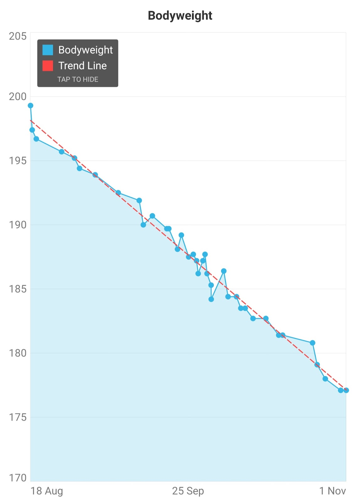
I've matured quite a bit in comparison to last year's attempt, and my goal is to lose weight down to 165 and maintain my weight loss for the long term with a bodyfat percentage below 15%.
I will probably stick with some form of intermittent fasting to lose weight and will surely implement it in my liturgical life. But for weight maintenance... I don't know; perhaps I'll just do CICO.
Here are the surface level benefits that I find from doing intermittent fasting:
1. Subordination of Hunger.
Being hungry sucks, but it is something that I've learned to control. What intermittent fasting taught me was that hunger does not equal malnutrition. Sometimes I am hungry when my body doesn't need food. Now I make better food choices even when I am hungry.
2. Increased attention
I would not say it gives me extra energy, but I do feel like I'm more mono-task oriented and absorbed in whatever task I'm undertaking.
3. Adds free time
All that time to eat and to cook can be now used elsewhere.
4. Easier to Abstain than to limit
It is much easier to say, "I cannot eat right now because I am in my fasting window," rather than, "I am only going to eat a small portion of this really tasty food."
5. Bigger meals
I've always been a big eater, and intermittent fasting allows me to my plate fill with food.
UPDATE (9/24/22): 177.3 lbs! I did do a 2-day fast and reached 175 lbs, but I don't think that counts because my weight rebounded back to 178.7 the next day.
no gables.
This year, I am teaching a combo class, where half of my class I already taught last year. I was not expecting this.
One part that saddens me is that I cannot logistically read, Anne of Green Gables as a class read-aloud because students last year already read it.
I am still not sure what book I should read for the whole class. I am defaulting to the curriculum assigned Noah Webster, which is interesting, I still find it insanely boring.
This is why I am, in-part, jealous of English and History teacher's who get to read Romeo & Juliet, To Kill a Mockingbird, or the Iliad to their students yearly. Yes, there is nothing stopping me from sitting down and reading those books myself, but there is something wonderful about structuring it as a community read aloud or book discussion.
I have not decided what book to read aloud to my ~5(±1)th grade class. I was thinking of perhaps reading Charlotte's Web.
estate mistake.
One time, I was at a garage sale and was looking at some belts. There were a number of leather belts with the name "Fred" imprinted on them, varying from very skinny (roughly a waisteline of 25) to fat (roughly a waisteline of 40).
I said to myself, "Wow, Fred must have gained a lot of weight!"
A lady behind me said, "Actually, Fred lost a lot of weight. Very quickly in fact."
That's when I realized I was not a garage sale, it was an estate sale.
subordination.
During one of our school's daily school chapel services, the principle—my boss—said to the student assembly, "Subordination. This isn't a word we use very often. A normal persom wouldn't use this word when writing in their journal." Which is strange because I know that I use that word in a regular basis, but I just don't know in what context... History?
Taking this as a personal challenge, I decided to write this post.
The concept of subordination often feels alien to many Americans where hyper-individualism is rampant. Even if many citizens openly believe in and advocate subordination, this rule either applies to others or that they themselves are those whom people should subordinate to. Yet, subordination is critical when participating in a community, and not every aspect of society should be a bargaining chip for upward mobility.
Subordination, as with submission and obedience, is clear in the Bible. As Christians, our most basic prayer is asking for God's Kingdom to come to Earth as it is in Heaven. The bulk of Jesus' parables describe a Kingdom, either the Kingdom of God or Kingdom of Heaven depending on the gospel book. And we are called to submit to God's authority, to government officials, to each other. When looking at scripture, God's Kingdom is clearly not designed as a "You scratch my back, I scratch your back," relationship dynamic.
I remember reading The Social Contract by philosopher Jean-Jacques Rousseau and thinking to myself, "What is so strange and controversial about this book? All of his posits and conclusions are 'No duh.' type of statements."
Looking back, the reason why all of his statements felt 'No duh' is because we are living in Rousseau's world. It is startling to consider that when he wrote The Social Contract, it was so novel and so controversial that was it was banned in Paris and burned in Geneva.
I am not saying that Social Contract is true or false in this situation or that situation, but what I am saying is that it is pure folly to assume that Social Contract Theory is the fundamental framework that has guided all relationships ab antiquo ad infinitum.
What does it mean that "All power is given unto [Jesus] in heaven and in earth. Go ye therefore..."? What does this supernatural Christ-like submission look like in my life? This is a question that every one Christian should seriously ask of themself.
UPDATE (9/23/22): I just realized where I use the word subordination on a regular basis: Subordinating clauses.
heatwave.
The heat was sweltering. Began on three day weekend. Ran on Monday at noon. Wife thought I was crazy.
Life is becoming busy.
Tuesday, students were hot. I am heat tolerant. Like waking up to hot room, peeling blanket off sweaty skin feeling the 'relatively' cool air. Or hot car sauna.
Students are not.
Went to the doctor. Very streamline. Worried about results.
Update: My health is fine overall, but I have high cholesterol.
I was starving for Ramen on Thursday. Teacher commissioning. The sanctuary was hot, probably in the 90s or more.
My wife attended. She was not enjoying herself.
Kids played in the dark afterwards.
schole and Baader-Meinhof
Right now, the classical education field is thrumming with the word *scholé* meaning *leisurely learning* or *restful learning*.
Or perhaps the reason why I see *scholé* everywhere is because I've been reflecting upon that concept of restful learning recently, aka the Baader–Meinhof phenomenon.
It's probably a mix of both.
parent privacy.
One of the unexpected difficulties about writing this blog is being silent on my day-to-day life as an elementary school teacher. My job comprises the majority of my day, and yet, I would be appalled if a parent emails or texts me saying, "I just discovered you blog, and I heard you talking about my child. At least, I think it is my child..."
In most likelyhood, I am being too overly cautious. However, I think it is important to have a wide berth on situations like these. Rather be safe than sorry.
What I can say is that I am teaching a combo class this year, 4th Grade and 5th Grade. Having two years of 4th grade under my belt helps a lot, but much of my spare time is familiarizing myself with the 5th grade curriculum.
I refuse to just "wing it". Regardless of what others say, that is not teaching. Teaching requires an imparting of knowledge from the teacher to the student. Any other course of action is just glorified babysitting.
changing phones.
With reluctance, I'm changing phones. Among the slew of emerging problems with my 4+ year old phone, the final kicker is that my current phone barely holding a charge—having only 3 hours of screentime on sparse use. While the available phones I could upgrade to are nice, there are certain key features that I'm surprised to learn have fallen out of favor by the general consumer: swappable batteries, expandable memory, and a headphone jack...
I miss the good-ol'-days when phones had removable batteries. I fondly remember my trusty LG V20 where I could swap batteries whenever the phone is running low.
It is terrifying to see that smartphones are trending towards the disposable—where many individuals replace their perfectly adequate phones with the shiny newest model on a yearly basis.
I settled on buying refurbished again. I view phones like I view cars. My dad, who always buys new cars, once off-handedly commented that the moment one drive a new and newly bought car out of the dealership, the car loses $2,000 in value. At that time, and still now, I thought that buying new was idiotic and said to myself, "When I buy a car, it will be a car that someone is selling right after driving out of the dealership. Then I will use that $2,000 elsewhere." Same thing with a phone.
logging out and checking in.
I've made two commitments at odds with each other:
- Commitment 1: Have an active online presence.
- Commitment 2: Abstain from the internet especially social media.
Nowadays, the internet is ubiquitous. I remember when Starbucks announced free WiFi at all their locations. "Really?" I thought skeptically, "That's so expensive! How are they going to make money?" Now, this convenience is an expectation, with scoff often met when a coffee shop doesn't provide free WiFi. The internet has become as much of a public utility—even more so with the advent of the smartphone.
While a useful tool, too much internet is a bad thing. Social media addiction is a well-documented danger. Even I—a Luddite in comparison to my tech-savvy millienial contemporaries—frequently find myself losing hours of my life mindlessly scrolling through social media feeds.
Two years ago, I made a commitment to learn social media. Now that I am extending my social media usage from text-based mediums towards alluring image-based mediums, the necessity for delineating boundaries is even more paramount.
My commitment to limit my internet usage doesn't mean 'no cellphone' and 'no computers'—which may be the next big step—but rather, the it is a cutting back on programs and apps that require constant internet connection.
However, I find it still necessary to have an active online presence. I desire to be an additional voice to projects worth pursuing. My decision to more vocally outline my time and where mu energy goes to is, in part, to keep myself accountable and to show others what type of person I am.
To put it succinctly, I also want to maximize my contribution but limit my consumption of social media.
Maximize upload, minimize download.
Here is a brief brainstorm of how I will wean myself off of internet dependancy while also increasingly sharing more of my life and my projects. Keep in mind that these thoughts are inchoate and not a recommendation.
Internet-Less Analogs
Thought Questions:
- What changes can I do to make an internet-less life more convenient? What can I do to make an internet-centered life less convenient?
- What did people do for [task] prior to the internet? What are their strengths and weaknesses? What can I do to maximize their strengths while mitigating their weaknesses? (I'm trying to not say internet-alternative tasks because I don't think an internet-centered life should be considered the default state of an individual.)
- What static online resources do I frequently use that can be downloaded? What resources are better used in physically form (like the Bible, certain reference books, notebooks, pen and paper, and index cards)
Tasks:
- Optimize room to encourage literature reading
- Create schedule that develops chain habits
- Download offline Wikipedia
- Use a physical planner
Social Media Alternatives
Thought Questions
- What are ways to foster physical community for my various interests?
- Who are local friends whom I can meet with on a regular basis?
- Social Media is designed to be addictive. How can I limit my direct interaction with social media apps?
Tasks:
Meet with people in-person
- Research outside interest groups:
- classics (Great Books club),
- writing (nanowrimo, shut and write)
- hiking
- running
- cooking
- scrapbooking
- Find third-party Social Media Manager App
- Schedule posts in intervals
- Host Episode/Movie night with friends
- Cook for friends
- Scrapbook (so that when I want to look at pictures, I don't have to open a social media site)
- Transition more to blog format.
- focus more on long-form writing
- Have the journal blog be the headquarters and other social media sites be outposts.
- Downgrade mobile data plan (why extra money if I am going to use less internet?)
Increase Social Media Presence
Thought Questions
- What are the strengths and weaknesses of each type of social media apps?
- What are ways to automatically seamlessly upload pictures and text with the least amount of effort?
- What are ways to automate my postings?
- Find third-party Social Media Manager App
- Use Blog for long story, Instagram for pictures, and Twitter for Pull-Quotes from long story
monosyllabic.
One of my favorite aspects to marriage is my monosyllabic conversations with my wife Maybelline.
The most common one is:
Roughly translated, this means:
Often
My dear, I require sustenance. Do you require nutrients to operate as well?
Mayb
Yes, my body has hankering pangs associated with lack of nutriments. Shall we endeaver to fill this lack posthaste?
And off we go, rummaging our fridge for some comestibles with the fervor of an American pigmy shrew.
I love my wife.
cold hard floor.
I frequently wake up alone; my wife sleeping on the floor.
Not because of an argument, fight, or tacit harboring judgement. She prefers sleeping on the floor.
I asked her why, and she says that she finds it comfortable. Why? Because it is cold and hard.
This makes absolutely no sense.
Cold and hard. Her exact words. That is the exact opposite of comfortable.
reading list.
I just finished reading To Kill a Mockingbird, Heidi, and Jane Eyre over the Summer.
Here is a list of books I'm currently reading:
The Greek Myths - Stories of the Greek Gods and Heroes Vividly Retold by Robin Water field and Katherine Waterfield
By coincidence, I have another book by Robin Waterfield entitled Why Socrates Died: Dispelling the Myths which is also an interesting book.
The Diary of a Young Shirley (The Definitive Edition) by Anne Frank
Reading diaries has always been an interest of mine. Personally, my favorite diary is tied with Katherine Mansfield's and Marcus Aurelius.
There are also a number of blogs I frequent, one of which is now defunct. It used to be called 'Asymptotically M' by a Chinese, piano-playing, economics student, Malin.
Gone With the Wind by Margaret Mitchell
The last 8 books I've read have been from female authors, so I felt it was a good time to try to read some male authors for a change. I went to the bookstore with the intent to buy the book For Whom the Bell Tolls by Ernest Hemingway, but somehow my mind changed the book name to Gone with the Wind. I didn't know how I made this blunder until I arrived home and started reading the book. My best guess to this blunder is that bells make sound waves which are tangentially related to wind.
got covid.
I got covid on the last week of school last year. We were so close! The entire school year went without a hitch.
I felt a little tired but shrugged it off during the weekend. I went to school and halft of the school called in sick. Fr. JG left early because he felt queazy. Tested positive. My other coworker also tested positive.
So, school was cancelled.
# blog thoughts 1.
Yesterday when visiting family, my brother told me, "I learned a new word today. MonEstory."
That's not a word.
"You wrote it." He then promptly showed me a post I made a week prior with my public spelling mistake on Instagram.
Learning about my error, I shrugged it off. Looking back on yesterday's events, this event reveals my comfortability as a writer. I'm more interested in conveying my ideas and little nervous about occasional mistakes.
This is my tenth blog post, so I think I've earned myself the right to me a little meta about this blog. (As to why I need to earn my own favor especially on a reacrational hobby such as this, I have no idea. Writing is a game to me, and all good games have rules.)
First thing that comes to mind is my annoyance of the Blogger app on Android. Originally, I used a note taking app called Notion to type out my posts before "ctrl-c ctrl-v" it to Blogger but that became overly cumbersome. Now, I only use the Blogger app on Android to write out my posts. I find it clunky and outdated. It does not use markdown, and the only formatting it provides is bold, underline, italics, hyperlinking, and inserting a picture. I cannot even assign headers. Perhaps, I'll switch to a difference CMS if I don't abandon this project within the first year.
My ideal blog editor would be:
- mobile friendly
- natively uses markdown
- shows wordcount
- a flat-file system
- scheduling posts
In terms of the writing process, I'm surprised by how much longer it takes to feel content with a post. In a private journal, I have no qualms writing one or two words that makes sense to only me. But somewhere in my noggin, I am impelled to write posts in higher detail because I know someone may read it. After saving my blog post as a draft, I let it sit for over a week saying to myself, "I'll flesh it out later." and then post it unedited because I'm at the "whatever, I'm bored of this topic". Currently, I have 8 blog posts saved as drafts.
The feeling I get from writing posts is different from writing in a journal. I cannot say exactly, but I find it slightly less enjoyable posting publically. A private journal is for personal respite, but a public blog... well, a small part of me wants it to be successful. Also, touch screen typing feels less thoughtful and less "beautiful" than writing by hand. But blogging is not without it's merit. I feel a glee in seeing my wife or a friend read my thoughts.
While I'm making much headway, I feel like the writing process still feels stilted. Writing, itself, feels natural, but the writing habit as in the daily ritual of reflection and the editing process especially in paring down my words feels like a chore. And it shouldn't. Writing isn't a hustle but a deep breath and a wide yawn.
UPDATE Sept 10, 2022: I updated my blogger theme, and I like the look much better than the previous theme.
gone with the epic.
I am reading Gone with the Wind by Margaret Mitchell, and it is oddly disconcerting. It's writing style is eerily similar to modern epic fantasy novels. The limited third person, world-building, and character development. I hope it is not too insulting to say that writers like Stephen King, Brandon Sanderson, Robert Jordan, and Joe Ambercrombie have a formulaic style disctict from, for example, Victorian literature. Well, Mitchell shares in that style.
Or perhaps, it would be better to say that she was a progenitor of that style. This makes sense when considering a contemporary critic oncewrote that she "tosses out the window all the thousands of technical tricks our novelists have been playing with for the past twenty years." Taken at face-value, then her writing-style was forward facing in comparison to adjacent literary peers.
Whenever I begin to get lost in a reading spell of Gone with the Wind, I subconsciously begin anticipating for Scarlet O'Hara to begin stoking the "Life Fire" of her inner soul-furnace to manifest lightning bolts from her fingertips. I am jarred back to reality at the end of a chapter saying to myself, "That's it?". But this is not the fault of the book or the author, but of myself.
Apart from my self-imposed unconscious expectations of this book being an epic fantasy novel, the book is rather engaging. The book introduces people who interact with the main character Scarlet O'Hara. Then, subsequent chapters highlight each person's backstory, deepening there character. For example, Scarlet's father is described—from her perspective—as a short, amiable-to-a-fault Irish man who's prone to loosing money through gambling; he's the final authority of his plantation by name only—his wife Ellen is the true final arbiter. Then, the next chapter shows fills in this charicature, portraying him as a self-reflective immigrant who uses poker, wit, and hard work to achieve the "American Dream". Knowing his own weaknesses, he marries Ellen to make up for his faults.
So far, I am still in the antebellum stage of the book, and I am excited to see how Sherman's Total War and subsequent Revonstructin Era affects the main character. I have no intention of reading a synopsis or watching the movie until I finish reading the book.
skinny marinky problem.
I introduced the song Skinny Marinky Dinky Dink, I Love You to my students. The problem is that there are two commonly sung modern versions.
The intro and ending is the same:
Skinny Marinky Dinky Dink
Skinny Marinky Doo
I love you. (2x)
However, the lyrics for the main verse varies slightly depending on the source:
Version 1:
I love you in the morning,
and I love you late at night
I love you in the evening
When the moon is shining bright, oh
Video example of Skinny Marinky Dinky Dink (Version 1)
Version 2:
I love you in the morning,
And in the afternoon.
I love you in the evening,
And underneath the moon.
Video example of Skinny Marinky Dinky Dink (Version 2)
Our school uses Version 1.
However, which is technically better? In percentage of a 24 hour day, which one shows more availability of love?
Both all trying to imply that they love you all the time regardless of time of day. Version 1 explicitly states morning, night, and—very specifically—evenings when the moon is out. Version 2 explicitly states morning, afternoon, evening, and "underneath the moon". However contrary to common portrayal of the moon, the orbit of the moon around earth is not opposite of the orbit of the earth around the sun. This is apparent when we see the moon during the day. On average, the moon is above the horizon 12 hours of the day. It is not always visible during the day.
So, in terms of total time, let's add them up
Morning: 6 hr
Afternoon: 3 hr
Evening: 3 hr
Night: 12 hr
Under Moon at Night: 6 hr
Bright Moon during Evening: 1 hr.
So, on average
Version 1: ~19 hr/day
Version 2: ~18 hr/day
So on average, Version 1 has a slight edge over Version 2. Version 1 assumes that the moon must be visible—as in not a new moon—and shining bright, and only in the evening. (Technically, the moon is shining bright even under bad weather. The moon is still bright, but we can't see it!)
sj makers market.
While trying to learn how to use Instagram, I noticed that one of my friends ML has set up a booth for her potteryware in the upcoming local Makers Market in Santana Row.
Messaged other friends; we all visited and said hi.
To show our support—cause we love you ML—we bought a matcha mixing bowl and a mug. The stoneware is of good quality and knowing that it was made by a friend makes it ever so much more precious and enjoyable.
I miss ML. Time, work, and life makes it difficult to be with friends. It was much easier in college when it would not be a surprise to bump into each other. But now, as friends move away, hustle to make a living, and make families of their own, meeting up with friends is needs to be much more intentional.
tuesdays with tc.
I've been begun meeting up regularly with TC, my mentor on a weekly phone call. It is fun, and we are beginning to build up steam. This is probably our 5th time meeting every Tuesday.
Left: LYT Right:TC
I'm not sure what will become of it, but I am hopeful that I can learn from him many things that come from experience. While there is merit from learning from ones mistakes, there is also something invaluable from learning life skills from an elder with more life-experience.
It is not directly inspired by "Tuesdays with Morrie", but many much of his advice parrallels that book. I actually chose Tuesdays to meet with him because of the alliteration—Tuesdays with TC.
chester 2.
Apparently, this year was different from previous years.
Difference 1:
The camp director was not out and about due to having a not-so-slight case of man-eating-bacteria-consuming-his-leg. His day comprised of resting, rebandaging his leg, and keeping his leg raised as much as possible. He was taking presecribed antibiotics in hopes to abate the infection.
Still, his presence was authoritative, like an Anglican Professor X, as he wheel-chaired around giving directions and sage-like wisdom. (That actually fits him well because he is venerable, a principle, and bald.) I wonder what he would be like at his best, probably stomping around like a ship captain telling his crew to everyone to man the deck and batten down the hatches.
We did see him briefly for a brief lecture.
Difference 2:
This year's choir director was also a different person from the previous years. He is a very casual and soft-spoken guy which surprises me. For some reason, whenever I imagine a choir director, I imagine him with a booming voice. (And also with a slight Italian accent.)
I hear he's more lenient and forgiving of a director which I'm grateful for because I've never sung in harmony before.
Difference 3:
Attendance was much smaller this year than previous years. The whole pandemic and local fires from last year made others disinclined to attend this year. So some of the "you got to be there to meet this person and that person" regulars were not present.
But different does not necessarily mean better or worse. Since this was my first time attending, I decided to take in the sights with face value. And judging from the first day, I knew that it would be a memorable experience.
I decided to not go to the lake today because people were hauling and setting up the sailing boats, which I had no experience doing, and also, I had only 2-hours of recreation time left for the day.
Rather than join the others, I decided the best use of my time would be to use my free-time elsewhere. So, I decided to go biking and explore the town.
There were a number of places of note during my meanderings: the local bookstore, the local museum, the thift-store, the only fast-food restaurant in Chester (which was a Subway).
One place that particularly interested me was the local coffee shop called "The Coffee Station".
The outside had a small patio with wooden benches and smaller diner seate. Walking in, Billy Jean was playing in the background. I was the only customer there. I ordered a hot plain latte and looked around at the decorations, knickknacks, and displayed on the walls.
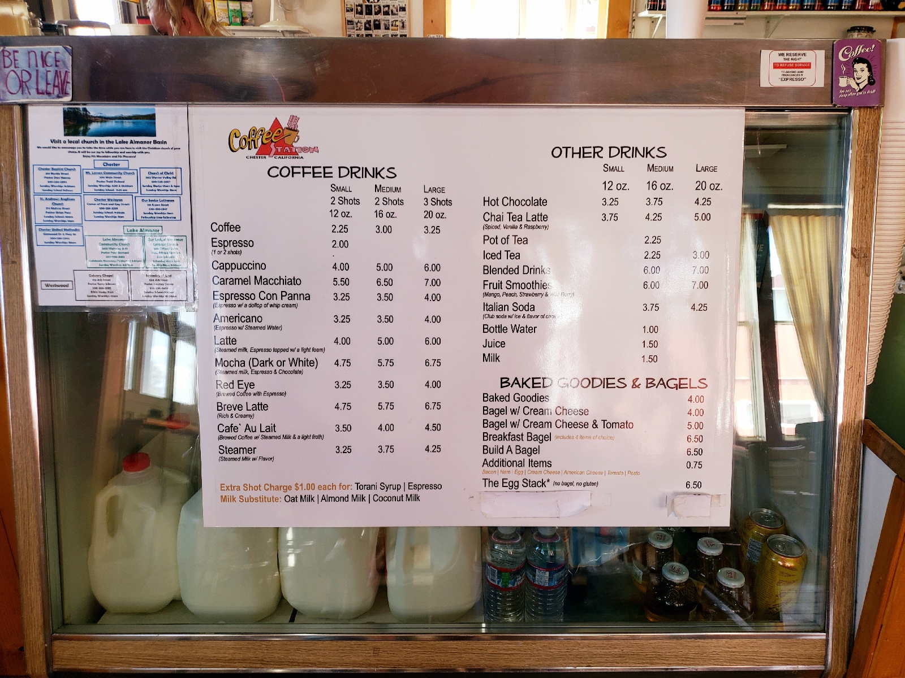
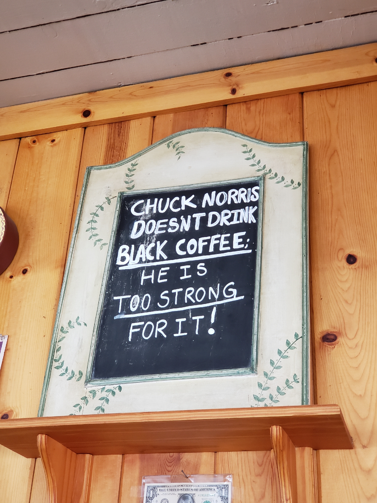
Looking around, it was clear that the coffee shop had a vintage Americana vibe. Once in a while, other customers entered or ordered through the drive through. But it was not as if there was a large influx of people coming in. I feel that this slow pace is typical throughout the town of Chester, not just in The Coffee Station.
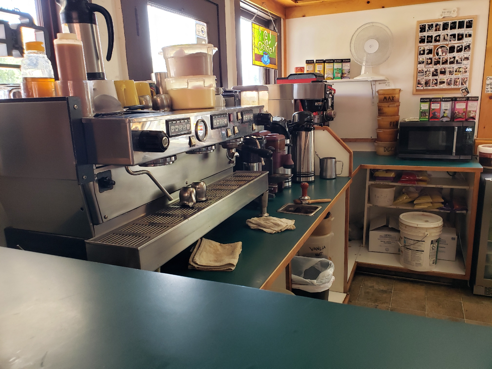
To my surprise, I realized that the music playing was not from a playlist. The cafe was playing from a local radio station! I know that it sounds whatever, but it is usually Spotify or CD on repeat. That is probably not surprising for many of you, but from a regular coffee shop goer in the Silicon Valley Bay Area, most coffee shops stream from FM radio or Spotify.
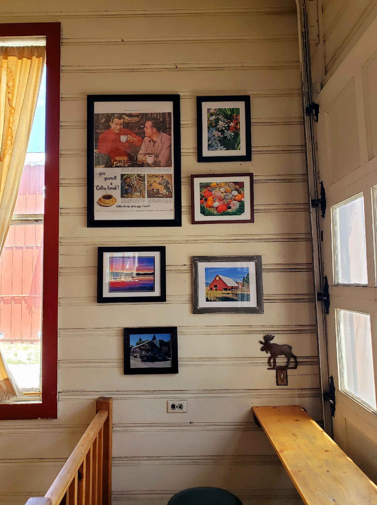
There is a roll up garage door, but the way the coffee shop is designed, there's no way to fit the car inside. The lounging area of the coffee shop is all atop a raised wooden platform. I wonder if they open up the garage door to clear the air sometimes. I cannot image another use for it.
chester 1.
Day 0
The drive to Chester, CA from San Jose took around 4½ hours—though the time went by quickly because of the Jane Eyre audiobook.
An aroma of smoke permeated the air, increasing in intensity as I continued travelling northward. It wasn't an acrid smell; more like the subtle smell of a lingering distant campfire. (Addendum: I later heard from S.H. that there was a fire near Redding.)
At first, the ride was straightforward with long straight stretches of highway. But as the car drove around and partly through the base of Butt Mountain, the road quickly turned serpentine with hairpin turns. Looming trees and large ditches hugged the road on both sides. The journey would probably had felt less terrifying if I had arrived during sunlight hours rather than at night. Beyond the short reach of my car's headlight was pitch-black darkness.
At one point, a car behind began tailgating. Nervous about making a sudden stop and getting rear ended—for I was unfamiliar with these undulating verdant paths— I allowed him to overtake me. Once he began spearheading the journey, his speed decelerated, decreasing even to 10 mph slower than when I took the lead. Whenever we reached straighter two-laned segments of the winding road, he drove even slower, wanting me to overpass him. Obliging, he was once again riding against me almost bumper-to-bumper urging me to drive faster. I tried slowing down, but he seemed intent on and comfortable with tailing me, pressuring me to drive faster. It came to a point where I actually had to momentarily park on the side of the road in order for him to finally overtake me. I used this time to give myself a stretch break. I could see the stars clearly, so inunerable and so bestudded that I could see the silhouette of the trees around me. Driving, I soon encountered him again, keeping my distance. Whenever we reached the passing lanes—straighter and wider segments of the road that became two lanes—it was clear by his driving that he wanted me to take the lead. I declined his offer, feeling much safer driving behind him using his break lights in addition to the road markers to make my way through the pitch dark. Unlike when he was riding my stern, I never used this opportunity to reciprocate impropriety; I gave him a wide berth.
I finally arrived at my destination at 10:15PM.
I slept in a room with two bunk beds, which was not surprising for the venue during the school year was a boarding school. I slept in one of the bottom bunks. The bed was surprisingly warm.
My bunkmates were S.H., N.B., and A.F. They we're getting ready for bed.
"If A.F. crawls into bed with you," N.B. warned, "just push him off."
"Dude!" A.F. chuckled. "Don't introduce me like that! He'll misunderstand." Turning to me, he continued. "I was sleepwalking and accidently slept in someone else's bed. It used to be my bed."
Travel-wearied, I quickly brought in my bike and travel luggage, changed into more comfortable sleeping clothes and got ready for bed.
Now lying in my bed, I honestly don't know what to expect for this week-long trip. I wonder if I am the only Asian here. (Addendum: I was.) I've never had experience singing in a choir nor do I know my vocal range. Hopefully, the choir master is merciful. I feel like I forgot to pack something... ugh.
Time to go to bed. Today's been a long day and the day will probably be even longer tomorrow.
Night.
rome, usa, latin, english.
I've been reflecting on the best way to teach 4th grade American History and English, and an idea has been bouncing in my head recently.
We should teach Roman history and American history side-by-side. As in, we should teach short biographies of famous American historical figures and compare & contrast them with Roman historical figures. (Wait a second... now that I think about it, I am essentially just making making a modern Plutarch's Lives! Ha!)
For English, we should just teach Latin and use that as a springboard to teach English grammatical convention. It worked for me. I learned more about the grammatical structure and conventions of the English Language when I began studying Latin.
sleeping late.
I’ve made quite an idiotic goal for myself this past month: to sleep later than my wife Maybelline. I am on vacation—I’m an elementary school teacher—and now she recently switched to a 9-to-5 job.
I am clearly losing this battle. I’ve pushed myself to stay awake until the late hours of 1:00 a.m., and still… STILL she remains awake, typically reading a book or playing some phone game. Even more ignomious, she is completely unaware of this unrequited challenge between us!
It's sorta like magic. I go to bed alone and wake up beside me. My morning routine is to shower my unconscious wife with kisses before I go on with my morning routine. She usually begins her morning an hour or two after I wake up.
Actually, over the course of our 1.5 years of marriage, I’m beginning to doubt if she even falls asleep for a full night's rest. For sure, I've seen her wake up, and indeed, she is in the habit of dozing briefly midday like a cat abed a sun-warmed carpet; but I have a rising suspicious that she’s an outlier and exception when becoming “…healthy, wealthy, and wise.”
Two days ago, I pushed myself to the limits of my conscious mind, staying awake until 2 a.m. I walked into the bedroom, my wife on the bed playing a phone game. I exasperated, “Why are you still awake?” She exclaimed with similar emotion, “I was waiting for you!”
Perhaps she is also embattled in a private goal, like me.
summer lethargy.
While taking morning walks these past few weeks, I’ve felt increasing onsets of lethargy. This ennui is not atypical; rather, it is—as determined by experience—seasonal, occurring mid-Summer as Lammas Day appoaches.
My guess to these increased bouts of bodily weakness is due to my lack of exercise in the beginning months of Summer. Apart from minimal morning walks, I spend the bulk of my summer days cloistered in my room, nose in a book. To many this sounds like a dreary existence, but it is a delight to me. Long reading sessions are hard to come by during the hubbub of the academic school-year.
Perhaps my attendance to choir camp in Chester will shake me out of this lethargy and encourage me to be more active for the remaining Summer. I hear that there are many outdoor activities in the area.
beginnings.
When making a commitment to make this blog, I spent an inordinate amount of time considering the contents of my first post.
I could begin this blog through two differing routes: (1) I could write this blog without an introduction (like the introduction of Beowulf), treating this as a continuation of some previous body of work, like my private journal, OR (2) I could highlight the first post as an inaugural event of some incipient relationship.
I chose option 2.
In my mind—and most likely in practice—the only difference between this blog and my own private journals is:(1) I will be writing publicly instead of privately and (2) the medium for capturing these thoughts will be digital —keyboard and computer—rather than analog—pen and paper.
This moment has been a long time coming, and, if I am honest, I harbor no reticence in it's now inception. I began privately journalling in the early 2010s for the purpose of someday participant in the larger writing community. I felt that I was not ready to put in my oar. When I did someday enter that larger conversation, I originally expected my debut to be through some sort of traditional publication.
However, I consider the merits of transitioning from my current practices to blogging to be much easier than preparing a book for publication. Why? Because I've noticed that the majority of my successes happen through small incremental steps rather than grand-sweeping overhauls from my daily routine. As my colleague JH used to say, “Build the momentum,” and that is why I am doing with this project, transferring the momentum of my writing habits with as little change as possible to this blog.
I'll defer my hopes and dreams of this blog until my next major milestone, my 20th blog post.
So, my hope for the next 18 posts is just to keep chugging along like I've always done. They're essentially just my regular journal entries.
— Often
how to make a coffee cup booklet.
However, the attractive convenience of disposable cups and bottles seems to always be an inhibiting factor when it comes to going packageless: if you buy just one cup of coffee or tea in a disposable cup every day, you’ll end up creating about 23 lbs of waste in one year. - Packageless
Following the advice of another blogger, I decided to collect all of my garbage for a month to see how wasteful I was. After a month, I was surprised at how much non-recyclable and non-compostable items I bought. One area of improvement was reducing my use of disposable coffee cups. Since a large majority coffee cups are generally not recyclable or compostable, I had to throw them away in the garbage can.
Last week, I had a brilliant idea: I should make booklet covers out of them! There is just enough paper from the coffee cup to for a small moleskine-sized booklet cover.
So I disassembled one of my coffee cups apart, and to my surprise, the large (Venti-sized) coffee cup had just enough paper to make a medium sized (3 1/2" x 5 1/2") notebook.
I looked around the internet to see if anyone else has thought of this but couldn't find a thing. So, I decided to make a tutorial about how to make a coffee cup booklet.
Tools and Materials
Materials
- 20 oz Large Coffee Cup (Venti)
- Paper
- Saddle Stitch Stapler
Disassembling Apart the Coffee Cup
One of the difficulties in this project is the process of dissassembling the paper coffee cup. Since they're designed to be watertight, the paper is lined with plastic and made with a thick stock paper making it difficult to tear apart without wrinkling or damaging the paper.
Step 1: Peel Back the Paper Cup Lip
Here is a part of the paper cup lip partially peeled back.
The lip of the paper is folded back to hold the lid in place, add structural stability at the top, and create a watertight seal at the top. The paper is rolled outward, so you have to unroll it so you can can cut along the seam in Step 2.
Step 2: Cut along the Seam
Cut at the center of the seam all the way to the bottom of the cup.
Next, you need to cut along the seam of the cup. At first, I tried to rip the cup apart at the seam, but the cup was glued so tight that I often found myself ripping the sides of the cup making it useless. I just used some scissors to cut the seam from the top all the way to the bottom.
Here is the bottom of the cup cut in half.
Afterwards, keep cutting straight until you cut the base of the cup in half.
Step 3: Remove the base of the cup.
Be careful not to rip the sides of the cup used for the booklet.
The bottom of the cup is useless, so you need to carefully remove it. Take care to pull slowly so the base peels away rather than ripping the sides of the paper cup.
Optional: Step 3.5: Flatten out the sides of the cup
Putting the booklet cover under a heavy weight helps flatten it out.
The paper cup naturally curves to take the shape of a paper cup. You can flatten it out by...
- curling it the opposite direction against the edge of a hard surface (like curling ribbons)
- ironing it out using an electric iron
- pressing it with a heavy object for several weeks
The booklet on the left has been in my pocket for more than two weeks while the booklet on the left is brand new.
However, this is not necessary in my opinion because as you put the booklet in your pocket, it will loosen up and conform to the shape of your fat thigh.
Step 4: Cut the Outline of the Book Cover.
I used the Moleskine book cover as a template.
After the paper cup is dissassembled, you need to cut out the general shape of a booklet.
Add some extra margin space when cutting the booket for Step 5.
Leave extra margin space because you will need to cut the top, bottom, and foredge of the booklet. You also need to angle the template so that the image on the front cover is centered on the booklet. Also, if you center the front cover, the back cover will not be centered.
Step 5: Cut and Fold all Pages of the Booklet
Here are some of the folded pages for the booklet.
I used fountain-friendly archive-quality paper for my notebooks.
Get some paper, cut them to a manageable size, and and fold them in half.
Step 6: Bind/Staple the Booklet Together.
Once you have all your pieces, you need to put everything together and staple bind them. If you don't have a saddle stapler, that's OK. You can staple them using a regular stapler and then fold afterwards. Another method is punch holes in all the pages and fold the staples in by hand.
This is saddle stapler I used.
I marked the edges of the paper with a pen, but next time, I will probably use a pencil so I can erase the markings.
If you want, you can sewn-bind them instead of stapling them.
Step 6: Cut the Edges
This is the paper guillotine that I used to cut the edges.
Lastly, you need to cut the top, bottom, and fore-edge of the book. I used a paper guillotine to cut the paper, but you can use an X-Acto knife to cut the edges of the booklet.
Step 7: Cut the Corners
I used an industrial paper corner punch, but you can use an X-Acto knife to cut the corner as well.
Once you cut the top, bottom, and fore-edge, you need to cut the corners of the paper to help prevent folded corners. Also, it just looks aesthetically pleasing.
Step 8: Use your Journal and Enjoy
I tested the paper with several types of pens.
You should celebrate! You are saving the enviroment and also have a nifty new notebook.
Pictures of Coffee Cup Notebooks
Here is a few samples of my final product.
Here are some sample front covers of my freshly made booklets.
Here are some sample back covers of my freshly made booklets.
Here are all the booklets that I made.
The industrial punch is useful for making consistent corners.
Here is a comparison of my notebook to a small Moleskin cahier.
Thoughts and Reflections
There are two reasons why I like making these notebooks:
- It's better for the enviroment - The general rule is that you should reduce, reuse, and then recycle. From now on, I'm going to buy a thermos so I buy less paper cups. However, since I already bought these paper cups, I might as well put them to good use by recycling them rather than throwing them away. However, not all of the paper is used from the coffee cups so there is still some waste.
- Waterproof Cover - Since the paper was originally designed to keep in water, it's reasonable to assume that it will help keep water out.
picks everywhere.
My dryer has always had a consistent problem of never completely drying my laundry. It's an old dryer (probably 7 years plus), and it rattles more than a maraca. So I decided that it was time to do open it up and do so general maintenance.
It took me a while to figure out how to finally get it open, but afterwards, I wiped and vacuumed all of the dryer's nooks and crannies, especially the humidity sensor. I was curious to find out what was causing all the rattling. My guess was coins, but as I took off each wing in the drum (the part that juts out so that the clothes tumble inside the dryer), I just kept finding more and more picks.
Here is the booty from my adventure.
11¢, a handful of picks, and lint. I'm a rich man.
To show how much picks I found, here is all of my pics laid out in rows of ten.
49 picks in total.
And this penny is kind of cool.
I was not expecting to have such a fun time cleaning the dryer. Everytime I removed a wing, I was laughing like a maniac. Overall, it took 2 hours to clean out the dryer and reassemble it back together. However, knowing what I know now, if I were to do it again, I could probably clean everything in less than 30 minutes.
It's been a week since I cleaned out the dryer, and I still can't help but laugh at the situation.
To provide a bit of backstory, I just moved into this house, and so all of these picks must have been from old tenants. I am assuming the same person. I own a musician myself so I can empathize with this pick loser. I've lost track of how many times I've frustratedly muttered to myself, "What happened to all my picks?" I never answered my own question, but I definitely answered his.
The narrow gap between the wing and the drum must have been the perfect trap to collect free-roaming picks that the original owner neglectfully left in his jeans. Perhaps I will find a treasure trove of socks, chap-sticks, and hair ties when cleaning out the washing machine.